overview of space
description::
× Mcsh-creation: {2019-09-19}
· space is the-continuous structure of the-Universe.
name::
* McshEngl.space,
* McshEngl.McshCor000007.last.html//dirCor//dirMcsh!⇒space,
* McshEngl.space!~McsCor000007,
* McshEngl.dirCor/McshCor000007.last.html!⇒space,
* McshEngl.space.lagoElln!=χώρος!ο,
* McshEngl.space.lagoSngu!=cou,
* McshEngl.space.lagoZhon!=kōngjiān-空间,
====== lagoSinagu:
* McshSngu.cou!=space, {2026-08-05} from cau;cai;ca!=RltnEntity_then_space and a-o-u vowel-chart,
* McshSngu.old.jeu!=space, {2025-12-02}
* deu!=space, {2025-12-01} da;dau!=relation,
====== lagoChinese:
* McshZhon.kōngjiān-空间!=space,
* McshZhon.空间-kōngjiān!=space,
====== lagoGreek:
* McshElln.χώρος!ο!=space,
====== lagoTurkish:
* McshTurk.uzay!=space,
======
"The word **space** comes from a long linguistic path meaning *room, distance, or interval*.
**Etymology**
* **Latin:** *spatium* — “room, area, distance, interval of time”
* **Old French:** *espace* — “distance, interval, extent”
* **Middle English:** *space* — “extent, area, or emptiness”
**Core idea through history:**
Something **stretched out** or **set apart** — whether in **physical distance**, **area**, or even **time**.
**How meanings expanded**
* **Physical area:** an open or empty place
* **Distance:** space between objects
* **Time:** “a space of time”
* **Modern science:** outer space (the vast expanse beyond Earth)
**Interesting note:**
The Latin root *spatium* is also behind words like **spatial**, **spacious**, and **spacetime**.
If you want, I can also break it down philosophically (Newton vs Einstein), linguistically across other languages, or scientifically."
---
"Here’s how **“space”** is expressed across major **language families**, with **native word + IPA pronunciation**. I’ve grouped them genealogically for clarity.
---
## **Indo-European Family**
### **Germanic**
* **English:** *space* /speɪs/
* **German:** *Raum* /ʁaʊm/
* **Dutch:** *ruimte* /ˈrœy̯mtə/
* **Swedish:** *rymd* /rʏmd/
### **Romance** (from Latin *spatium*)
* **Latin:** *spatium* /ˈspa.ti.um/
* **French:** *espace* /ɛs.pas/
* **Spanish:** *espacio* /esˈpa.θjo/ (Spain), /esˈpa.sjo/ (LatAm)
* **Italian:** *spazio* /ˈspat.tsjo/
* **Portuguese:** *espaço* /iʃˈpa.su/ (PT), /isˈpa.su/ (BR)
* **Romanian:** *spațiu* /ˈspa.t͡sju/
### **Slavic**
* **Russian:** *пространство* (*prostránstvo*) /prɐˈstranstvə/
* **Polish:** *przestrzeń* /ˈpʂɛ.stʂɛɲ/
* **Czech:** *prostor* /ˈpros.tor/
* **Bulgarian:** *пространство* /proˈstran.stvo/
### **Hellenic**
* **Greek:** *χώρος* (*chóros*) /ˈxo.ros/
---
## **Afro-Asiatic Family**
### **Semitic**
* **Arabic:** *فضاء* (*faḍāʾ*) /faˈdˤaːʔ/
* **Hebrew:** *מרחב* (*merkháv*) /meʁˈχav/
---
## **Uralic Family**
* **Finnish:** *avaruus* /ˈɑʋɑruːs/
* **Hungarian:** *tér* /teːr/
---
## **Sino-Tibetan Family**
* **Mandarin Chinese:** 空间 (*kōngjiān*) /kʰʊŋ˥ tɕjɛn˥/
* **Cantonese:** 空間 (*hung1 gaan1*) /hʊŋ˥ kaːn˥/
---
## **Japonic Family**
* **Japanese:** 空間 (*kūkan*) /kɯː.kan/
---
## **Koreanic Family**
* **Korean:** 공간 (*gonggan*) /koŋ.ɡan/
---
## **Turkic Family**
* **Turkish:** *uzay* /uˈzaj/
* **Kazakh:** *кеңістік* (*keñistik*) /kʲeŋɪsˈtɪk/
---
## **Dravidian Family**
* **Tamil:** வெளி (*veḷi*) /ʋeɻi/
* **Telugu:** స్థలం (*sthalaṁ*) /stʰa.lam/
---
## **Austronesian Family**
* **Indonesian:** *ruang* /ru.aŋ/
* **Tagalog:** *espasyo* /ɛsˈpaʃo/
---
## **Conceptual Pattern (Across Families)**
Languages tend to conceptualize *space* as:
* **Emptiness / openness** (Chinese 空, Arabic فضاء)
* **Room / container** (German *Raum*, French *espace*)
* **Extension / spread** (Slavic roots, Latin *spatium*)
If you want, I can:
* compare **physical vs abstract vs cosmic “space”**
* show **proto-language reconstructions**
* or map **semantic metaphors** across cultures"
[{2025-12-15 retrieved} https://chatgpt.com/c/69406018-4de4-8326-908d-a8750f1b5bca]
namingActg of space
description::
× Mcsh-creation: {2026-10-04}
· the-naming-action of a-place.
* lagSngo:
· doName,
* lagElla:
· γυμνασία (= γύμναση) => γυμνάσ-ιον (= ο τόπος όπου γινόταν η γύμναση, γυμναστήριο),
· γραφεύς => γραφεῖον (από το γραφέ-ιον),
· ἰατρός => ἰατρ-εῖον,
[{2022-08-18 retrieved} https://synagonism.net/dirMcsh/dirLag/dirHitp/HitpLag000.last.html#idGaikP386]
· ἐλαία => ἐλαι-ών,
· μύρμηξ (μύρμηκ-ος) => μυρμηκ-ιά,
name::
* McshEngl.namingActg.space,
* McshEngl.space'namingActg!⇒namingActg.space,
dimension of space
description::
× Mcsh-creation: {2026-10-04}
· dimension-of-space is any attribute needed to identify any space-point.
· length, width, height.
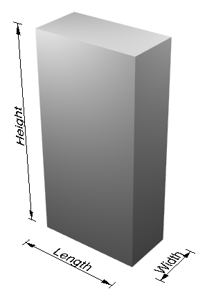
"A cuboid demonstrating the dimensions length, width, and height"
[https://en.wikipedia.org/wiki/Height#/media/File:Height_demonstration_diagram.png]
name::
* McshEngl.dimension-of-space,
* McshEngl.space'dimension,
relation of space
description::
× Mcsh-creation: {2026-10-04}
· space-relation is a-relation of a-space and an-entity.
=== _syntaxEngl: at!~ConjEngl!=RltnSpace:
· _SntxEngl: At the feast, we will eat heartily. [(At) the feast], [we] _SntxVerb:{will eat} [heartily].
=== _syntaxZhon: zài-在!~ConjZhon!=RltnSpace:
· _SntxZhon: 他 在 美国。 :: _SntxSubj:[Tā] _SntxSpace:[(zài) měiguó]。 != [he] [(in) America].
· _SntxZhon: 妈妈 在 家。 :: _SntxSubj:[māmā] _SntxSpace:[(zài) jiā]。 != [mom] [(at) home].
· _SntxZhon: 我 在 上海 上 大学。 :: _SntxSubj:[Wǒ] _SntxSpace:[zài Shànghǎi] _SntxVerb:{shàng} _SntxObj1:[dàxué]. != I went to college in Shanghai. != Πηγαίνω στο πανεπιστήμιο στη Σαγκάη.
=== Subj + [住(zhù), 放(fàng), 坐(zuò), 站(zhàn)] + 在 Location:
· _SntxZhon: 你 住 在 上海吗？ _SntxSubj:[Nǐ] _SntxVerb:{zhù} _SntxObj1:[zài Shànghǎi] {ma}? != Do you live in Shanghai?
=== dào-到!~verbZhon!=DongArriving:
· _SntxZhon: 他们 已经 到 酒吧 了。 : _SntxSubj:[Tāmen] _SntxTime:[yǐjīng] _SntxVerb:{dào} _SntxSpace:[jiǔbā] {le}. != They have already arrived at the bar.
=== _syntaxZhon: cóng-从!~ConjZhon:
· _SntxZhon: 太阳 从 东边 升起。:: _SntxSubj:[Tàiyang] _SntxSpace:[(cóng) dōngbiān] _SntxVerb:{shēngqǐ}. != The sun rises from the east.
name::
* McshEngl.RltnSpace,
* McshEngl.at!~ConjEngl!⇒RltnSpace,
* McshEngl.being-RltnSpace!⇒RltnSpace,
* McshEngl.ConjEngl.at!⇒RltnSpace,
* McshEngl.relation.space!⇒RltnSpace,
* McshEngl.RltnEntity_then_space!⇒RltnSpace,
* McshEngl.RltnSpace.lagoElln!=σε;βρίσκομαι|είμαι,
* McshEngl.RltnSpace.lagoSngu!=cau;cai;ca,
* McshEngl.RltnSpace.lagoZhon!=zài-在,
* McshEngl.SntxSpace!⇒RltnSpace,
* McshEngl.space-relation!⇒RltnSpace,
* McshEngl.space'relation!⇒RltnSpace,
* McshEngl.verb.be-located!⇒RltnSpace,
* McshEngl.verb.be!⇒RltnSpace,
====== lagoSinagu:
* McshSngu.ca;cau;cai!=RltnSpace, from Chinese zài-在,
* ja!~ConjSngu!=RltnSpace, {2025-12-02}
====== lagoGreek:
* McshElln.ρήμα.βρίσκομαι!=RltnSpace,
* McshElln.ρήμα.είμαι!=RltnSpace,
====== lagoChinese:
* McshZhon.liáncí.zài-在!=RltnSpace,
* McshZhon.zài-在!~ConjZhon!=RltnSpace,
* McshZhon.在-zài!~ConjZhon!=RltnSpace,
DOING of space
description::
× Mcsh-creation: {2026-06-10}
* moving: at direction.
* locating something somewhere,
* placing,
* putting,
* covering,
* filling,
name::
* McshEngl.space'doing,
verb of space
description::
× Mcsh-creation: {2026-06-10}
"· list of locative-verbs:
Here’s a **list of common locative verbs in Mandarin Chinese** (verbs that express position, existence, or direction of a subject relative to a location). These verbs function as the main predicate and are often followed by a location noun phrase.
---
## Single-character locative verbs
| Verb | Pinyin | Meaning | Example |
|------|--------|---------|---------|
| 在 | zài | to be at / in / on | 他在家。 (He is at home.) |
| 住 | zhù | to live at | 我住北京。 (I live in Beijing.) |
| 坐 | zuò | to be located (of buildings/places) | 商店坐北朝南。 (The shop faces south, lit. sits north-facing-south.) |
| 躺 | tǎng | to lie (in a place) | 猫躺沙发上。 (The cat lies on the sofa.) |
| 站 | zhàn | to stand (in a place) | 他站门口。 (He stands at the door.) |
| 停 | tíng | to be parked / stopped at | 车停楼下。 (The car is parked downstairs.) |
| 放 | fàng | to be placed at | 书放桌上。 (The book is placed on the table.) |
| 挂 | guà | to hang at | 画挂墙上。 (The painting hangs on the wall.) |
| 贴 | tiē | to be stuck on | 标签贴盒子。 (The label is stuck on the box.) |
| 写 | xiě | to be written on | 名字写纸上。 (The name is written on the paper.) |
---
## Two-character locative verbs
| Verb | Pinyin | Meaning | Example |
|------|--------|---------|---------|
| 位于 | wèiyú | to be located at (formal) | 北京位于中国北方。 (Beijing is located in northern China.) |
| 处于 | chǔyú | to be situated at | 公司处于发展阶段。 (The company is at a development stage — abstract location.) |
| 坐落 | zuòluò | to be situated (of buildings, cities) | 寺庙坐落山脚。 (The temple is situated at the foot of the mountain.) |
| 来自 | láizì | to come from (origin) | 他来自上海。 (He comes from Shanghai.) |
| 生于 | shēngyú | to be born in | 他生于1990年。 (He was born in 1990 — temporal location.) |
---
## Locative verbs with directional complements
These combine a motion verb + directional complement to indicate final location.
| Verb | Pinyin | Meaning | Example |
|------|--------|---------|---------|
| 放到 | fàng dào | to put (so that it ends up at) | 书放到桌上。 (Put the book onto the table.) |
| 走到 | zǒu dào | to walk to | 他走到学校。 (He walks to school.) |
| 跑到 | pǎo dào | to run to | 孩子跑到公园。 (The child runs to the park.) |
| 搬到 | bān dào | to move (residence/object) to | 我们搬到上海。 (We moved to Shanghai.) |
---
## Negative locative verbs (existential)
| Verb | Pinyin | Meaning | Example |
|------|--------|---------|---------|
| 没有 | méiyǒu | there is no (location) | 他没有在家。 (He is not at home.) Note: 没有 negates existence/location. |
| 不在 | bù zài | not be at (deliberate negation) | 他不在家。 (He is not at home.) |
---
## Grammatical note
Unlike English, where location is expressed with a **copula (be) + preposition (in/at/on)**, Mandarin uses **locative verbs** directly followed by a location noun phrase:
- ✓ 他在家。 (He at-home.) — no preposition needed.
- ✓ 书放桌上。 (Book place table-on.) — 放 acts as a locative verb.
For existential sentences ("there is"), use **有 (yǒu)** or **在 (zài)** with different word order:
- 桌子上有书。 (On the table there is a book.)
- 书在桌子上。 (The book is on the table.)
---
Let me know if you’d like a comparison between **locative verbs** and **prepositions** in Chinese grammar."
"· list of english locative-verbs:
Here’s a **list of English locative verbs** — verbs that indicate the **location, position, or placement** of a subject or object in relation to a place.
These verbs can often be used in two patterns:
1. **Subject as location** (The book *lies* on the table.)
2. **Object as located thing** (She *laid* the book on the table.)
---
## 1. Stative locative verbs (position / existence)
These describe **where something is** without movement.
| Verb | Meaning | Example |
|------|---------|---------|
| **be** | to exist at a location | She is in the garden. |
| **lie** | to be flat / horizontal | The village lies in a valley. |
| **sit** | to be positioned (often of objects) | The castle sits on a hill. |
| **stand** | to be vertical / upright | A lamp stands in the corner. |
| **live** | to reside | He lives in Paris. |
| **stay** | to remain at a place | They stayed at a hotel. |
| **remain** | to continue being in a place | The keys remain on the table. |
| **dwell** (formal) | to live somewhere | They dwelt in a cave. |
| **reside** (formal) | to live permanently | She resides in London. |
| **hang** | to be suspended | The picture hangs on the wall. |
| **rest** | to be placed on a surface | The book rests on the shelf. |
| **float** | to be on top of liquid / air | Leaves float on the water. |
| **belong** | to be properly placed | The book belongs on that shelf. |
---
## 2. Change-of-state locative verbs (movement → location)
These describe **moving to or placing something at a location**.
| Verb | Meaning | Example |
|------|---------|---------|
| **put** | to move something to a location | Put the keys on the table. |
| **place** | to put carefully | Place the vase on the shelf. |
| **set** | to put in a specific position | Set the cup down here. |
| **lay** | to put flat | Lay the blanket on the bed. |
| **stand** (transitive) | to put upright | Stand the ladder against the wall. |
| **hang** (transitive) | to suspend | Hang your coat by the door. |
| **park** | to leave a vehicle somewhere | Park the car in the garage. |
| **store** | to keep in a place | Store the tools in the shed. |
| **keep** | to maintain in a location | Keep the medicine in the cabinet. |
| **leave** | to abandon / deposit | Leave the mail on the desk. |
| **dump** (informal) | to drop carelessly | Dump the trash here. |
| **install** | to place equipment | Install the software on the drive. |
---
## 3. Motion verbs that imply final location
These verbs indicate **movement that ends at a location**.
| Verb | Meaning | Example |
|------|---------|---------|
| **arrive** | to reach a place | They arrived at the station. |
| **come** | to move toward | Come to my office. |
| **go** | to move away | Go to the store. |
| **return** | to go back | Return to your seat. |
| **enter** | to go into | He entered the room. |
| **reach** | to get to | We reached the top. |
| **approach** | to come near | She approached the door. |
| **land** | to come down onto | The plane landed on the runway. |
| **settle** | to come to rest | Dust settled on the furniture. |
---
## 4. Verbs of location with prepositions (phrasal / prepositional verbs)
English often expresses location **verb + preposition**. The preposition carries most of the locative meaning.
| Verb phrase | Meaning | Example |
|-------------|---------|---------|
| **sit on** | to be positioned on | The cat sits on the mat. |
| **lie in** | to be inside | The treasure lies in the cave. |
| **stand by** | to be next to | The guard stands by the door. |
| **hang over** | to be above | The chandelier hangs over the table. |
| **live in / at** | to reside | She lives in Chicago. |
| **come from** | origin | He comes from Brazil. |
| **head to / toward** | direction | We are heading to the beach. |
---
## 5. Locative alternation verbs (both stative & causative)
These can appear in **two syntactic frames**:
- **Locative frame:** *He sprayed paint **onto the wall**.* (object = located thing)
- **With/possessor frame:** *He sprayed **the wall** with paint.* (object = location)
Examples:
| Verb | Locative frame | With frame |
|------|----------------|-------------|
| **spray** | Spray water on the plants. | Spray the plants with water. |
| **load** | Load hay onto the truck. | Load the truck with hay. |
| **pour** | Pour water into the glass. | Pour the glass with water (less common). |
| **cover** | Cover a blanket over the bed. | Cover the bed with a blanket. |
| **smear** | Smear paint on the canvas. | Smear the canvas with paint. |
--
## 6. Psych / abstract locative verbs
These use location **metaphorically**.
| Verb | Meaning | Example |
|------|---------|---------|
| **place** (abstract) | to assign (responsibility, trust) | Place your trust in me. |
| **put** (abstract) | to express, assign | Put the blame on him. |
| **locate** | to find the position of | Can you locate the source of the noise? |
| **situate** | to place in context | Situate the event in historical context. |
---
## Summary — Key difference from Chinese
| Feature | Chinese (e.g., 在) | English (e.g., be in) |
|---------|--------------------|------------------------|
| **Main locative verb** | 在 (zài) — single word | *be* — requires a preposition (in, at, on) |
| **Word class** | Locative verb (verb only) | Copula + prepositional phrase |
| **Example** | 他在家。 (He at-home) | He **is at** home. |
| **No copula needed** | Yes (在 is the verb) | No (be + preposition needed) |
Would you like a **comparison table** showing how English and Chinese locative structures map to each other?"
[{2026-06-10 retrieved} https://chat.deepseek.com/a/chat/s/f8300a38-c592-444a-8505-bc776cc85daa]
"· list of english locative-verbs:
Here’s a useful list of **English locative verbs** — verbs that express **placing, putting, moving, covering, filling, or locating something somewhere**.
---
## 1. General “put/place” verbs
* put
* place
* set
* lay
* position
* locate
* situate
* install
* arrange
* station
* deposit
* leave
* keep
* store
* house
**Examples:**
* She **put** the book on the table.
* They **installed** the machine in the factory.
* The village is **situated** near the river.
---
## 2. Verbs of putting something onto/into a place
* insert
* place
* put
* tuck
* stick
* attach
* fasten
* pin
* hang
* mount
* plant
* embed
* lodge
* fit
* slot
**Examples:**
* He **inserted** the key into the lock.
* She **hung** the picture on the wall.
* They **planted** trees along the road.
---
## 3. Verbs of filling or loading
These often take part in the **locative alternation**.
* load
* pack
* fill
* stuff
* cram
* stock
* supply
* furnish
* equip
* crowd
* cover
**Examples:**
* They **loaded** hay onto the truck.
* They **loaded** the truck with hay.
* She **filled** the glass with water.
---
## 4. Verbs of spreading or applying substances
* spray
* spread
* smear
* brush
* rub
* dab
* splash
* sprinkle
* scatter
* pour
* spill
* coat
* cover
* dust
* plaster
**Examples:**
* He **sprayed** paint on the wall.
* He **sprayed** the wall with paint.
* She **spread** butter on the bread.
---
## 5. Verbs of removing from a location
* remove
* take
* extract
* withdraw
* pull
* lift
* clear
* empty
* unload
* drain
* strip
* wipe
* scrape
* peel
**Examples:**
* They **removed** the books from the shelf.
* She **cleared** the table.
* He **unloaded** boxes from the truck.
---
## 6. Verbs describing position or posture
* sit
* stand
* lie
* rest
* remain
* stay
* lean
* hang
* perch
* crouch
* kneel
* recline
* settle
**Examples:**
* The vase **stands** on the table.
* The cat **sat** by the window.
* A coat **hung** behind the door.
---
## 7. Movement-to-location verbs
* go
* come
* move
* travel
* arrive
* enter
* exit
* approach
* reach
* return
* climb
* descend
* cross
* pass
* drive
* walk
* run
* jump
**Examples:**
* She **entered** the room.
* They **crossed** the bridge.
* He **climbed** onto the roof.
---
## 8. Common locative-alternation verbs
These can often appear in two patterns:
**Verb + theme + location**
**Verb + location + with + theme**
* load
* spray
* spread
* smear
* splash
* sprinkle
* scatter
* pour
* rub
* brush
* cram
* stuff
* pack
* fill
* cover
* coat
* decorate
* furnish
* equip
* supply
**Examples:**
* She **sprinkled** sugar on the cake.
* She **sprinkled** the cake with sugar.
* They **packed** clothes into the suitcase.
* They **packed** the suitcase with clothes."
[{2026-06-10 retrieved} https://chatgpt.com/c/6a292392-ee08-83ed-ab3a-441647df6c11]
name::
* McshEngl.verbSpace,
* McshEngl.locative-verb!⇒verbSpace,
* McshEngl.space'verb!⇒verbSpace,
* McshEngl.space-verb!⇒verbSpace,
* McshEngl.space_verb!⇒verbSpace,
conjunction of space
description::
× Mcsh-creation: {2026-07-17}
· argu-space_conj,
· verb-space_conj,
· sentence-space_conj,
name::
* McshEngl.space-conjunction!⇒ConjSpace,
* McshEngl.ConjSpace!=space-conjunction,
* McshEngl.space_conj!⇒ConjSpace,
* McshEngl.space'conjunction!⇒ConjSpace,
GENERIC-SPECIFIC-TREE of ConjSpace
description::
× Mcsh-creation: {2026-07-22}
name::
* McshEngl.ConjSpace'generic-specific-tree,
* McshEngl.ConjSpace'specific-generic-tree,
generic-tree::
* McshEngl.ConjSpace_Gntr,
===
* ... entity_Gntr,
specific-tree::
* McshEngl.ConjSpace.specific,
* McshEngl.ConjSpace_Sptr,
===
===
* above,
* across,
* against,
* ahead-of,
* among,
* around,
* at,
* bellow,
* beneath,
* beside,
* by,
* from,
* in,
* in-front-of,
* inside,
* into,
* near,
* on,
* onto,
* opposite,
* ouside,
* through,
* to!=direction,
* under,
* up,
* where,
* within,
* above | higher than | The lamp hangs above the table.
* across | from one side to the other | They walked across the bridge.
* along | following the length of | We walked along the river.
* among | surrounded by several things | She was among friends.
* around | surrounding or encircling | They sat around the table.
* behind | at the back of | The dog is behind the door.
* below | lower than | The shoes are below the bed.
* beside / next to | at the side of | Sit beside me.
* between | in the middle of two things | The bank is between the school and the park.
* far from | distant from | The village is far from the city.
* here | in this place | Come here.
* in front of | before or ahead of | She stood in front of the class.
* inside | within | Stay inside the house.
* near | close to | We live near the station.
* outside | not inside | They are waiting outside.
* over | above or across | The plane flew over the mountains.
* there | in that place | The keys are there.
* through | from one end to another inside | We drove through the tunnel.
* under | beneath | The cat is under the chair.
* where | in the place that | Sit where you can see the board.
* wherever | in any place that | I'll follow you wherever you go.
"Strictly speaking, English has only a few conjunctions of place:
where – Stay where you are.
wherever – Go wherever you like.
Many of the other words listed above are actually prepositions or adverbs of place, not conjunctions."
[{2026-07-22 retrieved} https://chatgpt.com/c/6a60f1c1-f854-83eb-aa01-a63e7e1c1955]
=== Chinese:
* cóng-从,
* dào-到!=direction,
* zài-在,
* zhì-至,
"In Chinese, the way we talk about space involves two key tools: **prepositions** (like "at" or "in") and **location words** (like "on" or "under"). They work together as a unit to describe where things are.
### 🏠 The Core Structure: Preposition + Place + Location Word
Unlike English, a location is usually described using a three-part formula:
**在 (zài) + [Place] + [Location Word]**
Here, **在 (zài)** means "at" or "in", and the Location Word specifies the position relative to the place .
| Location Word | Characters | Example | Translation |
| :--- | :--- | :--- | :--- |
| ...on / on top of | ...上 (...shàng) | 在桌子上 (zài zhuōzi shàng) | "on the table" |
| ...under / below | ...下 (...xià) | 在床下 (zài chuáng xià) | "under the bed" |
| ...inside | ...里 (...lǐ) | 在包里 (zài bāo lǐ) | "in the bag" |
| ...outside | ...外 (...wài) | 在门外 (zài mén wài) | "outside the door" |
| ...beside / next to | ...旁边 (...pángbiān) | 在我旁边 (zài wǒ pángbiān) | "next to me" |
| ...in front | ...前 (...qián) | 在车前 (zài chē qián) | "in front of the car" |
| ...behind | ...后 (...hòu) | 在门后 (zài mén hòu) | "behind the door" |
### ⚠️ Where Does It Go in a Sentence?
A key difference from English is that this location phrase usually comes **before the verb** .
* ✅ **Correct:** 我在图书馆学习。(Wǒ zài túshūguǎn xuéxí.) — "I study *in the library*."
* ❌ **Incorrect:** 我学习在图书馆。(Wǒ xuéxí zài túshūguǎn.)
However, with verbs indicating position or movement (like "live", "sit", "stand", "put"), the location phrase comes **after the verb** .
* 我住在上海。(Wǒ zhù zài Shànghǎi.) — "I live *in Shanghai*."
* 他坐在沙发上。(Tā zuò zài shāfā shàng.) — "He is sitting *on the sofa*."
### 🧭 Prepositions for Movement and Direction
If you want to talk about **movement from or towards** a place, other prepositions are used:
* **从 (cóng) — from**: 我从北京来。(Wǒ cóng Běijīng lái.) — "I come *from Beijing*."
* **到 (dào) — to**: 我到上海去。(Wǒ dào Shànghǎi qù.) — "I am going *to Shanghai*."
* **往 (wǎng) / 向 (xiàng) — towards**: 他往学校走。(Tā wǎng xuéxiào zǒu.) — "He is walking *towards the school*."
I hope this makes the logic behind Chinese spatial expressions clearer! If you have a specific sentence you're trying to build, feel free to share and I can help you work through it."
[{2026-07-22 retrieved} https://chat.deepseek.com/a/chat/s/acaa44c5-ff53-481d-bd0f-8a0fd43a907d]
=== Greek:
* στο,
* πάνω-στο,
* όπου | where | Πήγα **όπου** μου είπες. *(I went where you told me.)* |
* απ' όπου | from where | Γύρισε **απ' όπου** είχε φύγει. *(He returned from where he had left.)* |
* ως όπου / μέχρι όπου | up to where / as far as | Προχώρησε **ως όπου** έφτανε ο δρόμος. *(He went as far as the road reached.)* |
=== GreekAncient:
* ἀμφί + genitive/dative/accusative | around
* ἀντὶ,
* ἀπό + genitive | from, away from
* εἰς + accusative | into, to, toward
* ἐκ (ἐξ) + genitive | out of, from within
* ἐν + dative | in, on, among
* ἐπί + genitive/dative/accusative | on, upon, onto
* μετά + genitive | with (among)
* παρά + genitive/dative/accusative | from beside / beside / to beside
* περί + genitive/accusative | around, about
* πρό + genitive | before, in front of
* πρός + accusative | toward, to
* ὑπέρ + genitive/accusative | over, above, beyond
* ὑπό + genitive/accusative | under; by (agent)
ConjSpace.argu
description::
× Mcsh-creation: {2026-07-17}
* off,
· _SntxEngl: [The Great Barrier Reef, [(off) the northeast coast]], is renouned for skindiving, and big game fishing. :: _SntxSubj:[The Great Barrier Reef, _SntxSpace:[(off) the northeast coast]], _SntxVerb:{is renouned} _SntxOther:[(for) skindiving, and big game fishing].
name::
* McshEngl.ConjSpace.argu!⇒ConjSpaceArgu,
* McshEngl.ConjSpaceArgu!=ConjSpace.argu,
* McshEngl.ConjArgu.space!⇒ConjSpaceArgu,
* McshEngl.space-argu_conj!⇒ConjSpaceArgu,
ConjSpace.sentence
description::
× Mcsh-creation: {2026-10-17}
name::
* McshEngl.ConjSpace.sentence,
syntax of space
description::
× Mcsh-creation: {2026-07-15}
* argu-phrase,
* verb-argument,
=== argu-phrase:
· _SntxEngl: Jack built [the house\a\ [(in) which\a\ I now live]]. :: _SntxSubj:[Jack] _SntxVerb:{built} _SntxObj1:[[the house\a\] [_SntxSpace:[(in) [which\a\]] _SntxSubj:[I] _SntxTime:[now] _SntxVerb:{live}]].
=== verb-argument:
· _SntxEngl: I fear the winters [(in) Moscow]. :: _SntxSubj=brain-entity:[I] _SntxVerb:{fear} _SntxObj1=stimulus:[the winters] _SntxSpace:[(in) Moscow]. [WordNet]
name::
* McshEngl.space'syntax,
* McshEngl.syntax.space,
info-resource of space
description::
× Mcsh-creation: {2026-04-28}
name::
* McshEngl.space'info-resource,
evoluting of space
description::
× Mcsh-creation: {2019-09-19}
· creation of current concept.
name::
* McshEngl.evoluting-of-space,
* McshEngl.space'evoluting,
GENERIC-SPECIFIC-TREE of space
description::
× Mcsh-creation: {2026-10-04}
name::
* McshEngl.space'generic-specific-tree,
* McshEngl.space'specific-generic-tree,
generic-tree::
* McshEngl.space_Gntr,
===
* discreteNo_entity_Gntr,
* structure-of-entity,
* entity_Gntr,
specific-tree::
* McshEngl.space.specific,
* McshEngl.space_Sptr,
===
* place,
* semo-space,
* definite-space,
* definiteNo-space,
* relative-space,
* relativeNo-space,
* point-space,
* pointNo-space,
* space1,
* space2,
* space3,
space.reference
description::
× Mcsh-creation: {2026-10-04}
· denotes anonymously deictic (= esophoric or exophoric) space or interrogativly.
* deictic,
* interrogative,
name::
* McshEngl.reference.space,
* McshEngl.space.reference,
space.reference.interrogative
description::
× Mcsh-creation: {2026-10-04}
· space reference interrogative.
* adverb:
· _SntxEngl: _SntxSpace:[where] _SntxVerb:{do _SntxSubj:[we] go} _SntxDire:[from here]?
· stxZhon:
name::
* McshEngl.space.reference.interrogative!⇒spaceAsk,
* McshEngl.spaceAsk!=space.reference.interrogative,
* McshEngl.spaceAsk.lagoElln!=που,
* McshEngl.spaceAsk.lagoEngl!=where,
* McshEngl.spaceAsk.lagoZhon!=哪里-Nǎlǐ,
* McshEngl.pronAskEngl.where:spaceAsk!⇒spaceAsk,
* McshEngl.pronAskSpace!⇒spaceAsk,
* McshEngl.space.interrogative!⇒spaceAsk,
* McshEngl.spaceSms.interrogative!⇒spaceAsk,
* McshEngl.AdveEngl.where!⇒spaceAsk,
* McshEngl.where!~AdveEngl!⇒spaceAsk,
====== lagoSinagu:
* McshSngu.old.jeu-cio!=spaceAsk,
====== lagoChinese:
* McshZhon.nǎlǐ-哪里-(哪裡)!=spaceAsk,
* McshZhon.哪里-(哪裡)-nǎlǐ!=spaceAsk,
* McshZhon.nǎr-哪儿-(哪兒)!=spaceAsk,
* McshZhon.哪儿-(哪兒)-nǎr!=spaceAsk,
====== lagoGreek:
* McshElln.επίρρημα.που!=spaceAsk,
* McshElln.που!~AdveElln!=spaceAsk,
space.reference.deictic
description::
× Mcsh-creation: {2026-10-04}
· space, reference, definite, deictic.
name::
* McshEngl.space.reference.deictic!⇒spaceDeictic,
* McshEngl.spaceDeictic!=space.reference.deictic,
* McshEngl.deicticSpace!⇒spaceDeictic,
* McshEngl.space.deictic!⇒spaceDeictic,
* McshEngl.space.definite.deictic!⇒spaceDeictic,
* McshEngl.space.reference.interrogativeNo!⇒spaceDeictic,
====== lagoSinagu:
* McshSngu.old.jeu-dhio!=spaceDeictic,
space.deictic.near-personA
description::
× Mcsh-creation: {2026-10-04}
· space, exophoric, near personA.
=== zhè'er-这儿!=spaceDeicticNearA:
· _SntxZhon: 你的书在这儿。 :: Nǐ de shū zài zhèr. != Your book is here.
name::
* McshEngl.space.reference.deictic.near-personA!⇒spaceDeicticNearA,
* McshEngl.spaceDeicticNearA!=space.reference.deictic.near-personA,
* McshEngl.spaceDeicticNearA.lagoElln!=εδώ,
* McshEngl.spaceDeicticNearA.lagoElln!=here,
* McshEngl.spaceDeicticNearA.lagoZhon!=这里-zhèlǐ,
* McshEngl.AdveEngl.here!⇒spaceDeicticNearA,
* McshEngl.here!~AdveEngl!⇒spaceDeicticNearA,
* McshEngl.space.deictic.near-personA!⇒spaceDeicticNearA,
====== lagoChinese:
* McshZhon.zhè'er-这儿!=spaceDeicticNearA,
* McshZhon.这儿-zhè'er!=spaceDeicticNearA,
* McshZhon.zhèlǐ-这里!=spaceDeicticNearA,
* McshZhon.这里-zhèlǐ!=spaceDeicticNearA,
====== lagoGreek:
* McshElln.επίρρημα.εδώ!=spaceDeicticNearA,
* McshElln.εδώ!~AdveElln!=spaceDeicticNearA,
space.deictic.nearNo-personA
description::
× Mcsh-creation: {2026-10-04}
· space deictic nearNo personA.
name::
* McshEngl.space.reference.deictic.nearNo-personA!⇒spaceDeicticNearNoA,
* McshEngl.spaceDeicticNearNoA!=space.reference.deictic.nearNo-personA,
* McshEngl.spaceDeicticNearNoA.lagoElln!=εκεί,
* McshEngl.spaceDeicticNearNoA.lagoEngl!=there,
* McshEngl.spaceDeicticNearNoA.lagoZhon!=那里-nàlǐ,
* McshEngl.AdveEngl.there!⇒spaceDeicticNearNoA,
* McshEngl.there!~AdveEngl!⇒spaceDeicticNearNoA,
* McshEngl.space.deictic.nearNo-personA!⇒spaceDeicticNearNoA,
====== lagoChinese:
* McshZhon.nàlǐ-那里!=spaceDeicticNearNoA,
* McshZhon.那里-nàlǐ!=spaceDeicticNearNoA,
====== lagoGreek:
* McshElln.εκεί!=spaceDeicticNearNoA,
space.deictic.near-personB
description::
× Mcsh-creation: {2026-10-04}
· near personB deictic.
name::
* McshEngl.space.deictic.near-personB,
space.deictic.nearNo-personB
description::
× Mcsh-creation: {2026-10-04}
· not near personB deictic.
name::
* McshEngl.space.deictic.nearNo-personB,
space.place
description::
× Mcsh-creation: {2026-10-04}
· place is a-specific individual space.
=== _syntaxEngl: where!~ConjEngl!=RltnSpacePlace:
· _SntxEngl: _SntxSubj:[I] _SntxVerb:{know} _SntxSpace:[(where) _SntxSubj:[he] _SntxVerb:{is}]. [WordNet 2.0]
· _SntxEngl: _SntxVerb:{show} _SntxObj1:[me] _SntxSpace:[(where) [the business] _SntxVerb:{was} [today]]. [WordNet 2.0]
=== dìfāng-地方!=place:
· _SntxZhon: _SntxSubj:[她] _SntxVerb:{去了} _SntxSpace:[[中国][很多地方]]。 Tā qùle zhōngguó hěnduō dìfāng. != [she] {went} [[in China][to many places]].
name::
* McshEngl.place,
* McshEngl.location!⇒place,
* McshEngl.place.lagoElln!=τοποθεσία!η,
* McshEngl.place.lagoSqip!=vend,
* McshEngl.place.Turk!=yer!⇒place,
* McshEngl.RltnSpacePlace!⇒place,
* McshEngl.space.individual!⇒place,
* McshEngl.space.location!⇒place,
* McshEngl.space.place!⇒place,
====== lagoChinese:
* McshZhon.dìdiǎn-地点!=place-specific,
* McshZhon.地点-dìdiǎn!=place-specific,
* McshZhon.dìfāng-地方!=place-broad,
* McshZhon.地方-dìfāng!=place-broad,
====== lagoGreek:
* McshElln.θέση!η!=place,
* McshElln.μέρος!το!=place,
* McshElln.τοποθεσία!η!=place,
====== lagoTurkish:
* McshTurk.yer!=place,
toponym of place
description::
× Mcsh-creation: {2026-10-04}
· the-name of a-place.
name::
* McshEngl.toponym,
* McshEngl.name.toponym!⇒toponym,
* McshEngl.geographic-name!⇒toponym,
* McshEngl.placename!⇒toponym,
* McshEngl.place'toponym!⇒toponym,
====== lagoChinese:
* McshZhon.dìmíng-地名!=toponym,
* McshZhon.地名-dìmíng!=toponym,
====== lagoEsperanto:
* McshEspo.loknomo!=toponym,
====== lagoGreek:
* McshElln.γεωγραφικό-όνομα!το!=toponym,
* McshElln.τοπωνυμία!η!=toponym,
* McshElln.τοπωνύμιο!το!=toponym,
address of place
description::
× Mcsh-creation: {2026-10-04}
· the-name of the-place.
"In most of the world, addresses are written in order from most specific to general, i.e. finest to coarsest information, starting with the addressee and ending with the largest geographical unit."
[{2020-08-31} https://en.wikipedia.org/wiki/Address]
· _SntxZhon: _SntxSubj:[我] _SntxVerb:{忘了} _SntxObj1:[他(的)地址]。 Wǒ wàngle tā dì dìzhǐ. != [I] {forgot} [his address].
name::
* McshEngl.address_of_place,
* McshEngl.address-of-place!⇒address_of_place,
* McshEngl.place'address!⇒address_of_place,
====== lagoChinese:
* McshZhon.dìzhǐ-地址!=address_of_place,
* McshZhon.地址-dìzhǐ!=address_of_place,
====== lagoEsperanto:
* McshEspo.adreso!=address_of_place,
====== lagoGreek:
* McshElln.διεύθυνση-τοποθεσίας!η!=address_of_place,
geographic-coordinates of place
description::
× Mcsh-creation: {2026-10-04}
· the-latitude and the-longitude of a-place, for example:
· 39°42'04.6"N 20°47'14.0"E in degrees, minutes and seconds format.
· 39.701267, 20.787224 in decimal-format.
name::
* McshEngl.coordinates-of-place,
* McshEngl.place'coordinates,
* McshEngl.place'geographic-coordinates,
RltnPlace.doing
description::
× Mcsh-creation: {2026-10-04}
· the-place of a-doing|event.
=== _syntaxZhon: zài..shàng-在..上!~ConjZhon!=RltnPlaceDoing:
· _SntxZhon: 在 会议 上 :: zài huìyì shàng != at the meeting
· _SntxZhon: 在 婚礼 上 :: zài hūnlǐ shàng != at the wedding
· _SntxZhon: 在 课 上 :: zài kè shàng != in class
name::
* McshEngl.RltnPlaceDoing,
* McshEngl.place.doing!⇒RltnPlaceDoing,
* McshZhon.liáncí.zài..shàng-在..上!=RltnPlaceDoing,
====== lagoChinese:
* McshZhon.zài..shàng-在..上!~ConjZhon!=RltnPlaceDoing,
* McshZhon.在..上-zài..shàng!~ConjZhon!=RltnPlaceDoing,
====== lagoGreek:
* McshElln.στο:-ο-η-ο!~ConjZhon!=RltnPlaceDoing,
space.definite
description::
× Mcsh-creation: {2026-10-04}
· definite-space is space with clear boundaries.
name::
* McshEngl.space.definite,
GENERIC-SPECIFIC-TREE of space.definite
description::
× Mcsh-creation: {2026-10-04}
name::
* McshEngl.space.definite'generic-specific-tree,
* McshEngl.space.definite'specific-generic-tree,
generic-tree::
* McshEngl.space.definite_Gntr,
===
* ... entity_Gntr,
specific-tree::
* McshEngl.space.definite.specific,
* McshEngl.space.definite_Sptr,
===
* deictic,
* none-quantity,
space.defi.named
description::
× Mcsh-creation: {2026-10-04}
· named-space is a-space with a-name.
name::
* McshEngl.space.named,
* McshEngl.named-space!⇒space.named,
GENERIC-SPECIFIC-TREE of space.named
description::
× Mcsh-creation: {2026-10-04}
name::
* McshEngl.space.named'generic-specific-tree,
* McshEngl.space.named'specific-generic-tree,
generic-tree::
* McshEngl.space.named_Gntr,
===
* ... entity_Gntr,
specific-tree::
* McshEngl.space.named.specific,
* McshEngl.space.named_Sptr,
===
* Earth-surface-named!@McshCor000007#idSpc2Erthadrs,
space.defi.quantity.none
description::
× Mcsh-creation: {2026-10-04}
· space definite, quantity.none.
name::
* McshEngl.space.definite.none!⇒spaceDefiNone,
* McshEngl.spaceDefiNone!=space.definite.none,
* McshEngl.spaceDefiNone.lagoElln!=πουθενά,
* McshEngl.spaceDefiNone.lagoEngl!=nowhere,
* McshEngl.spaceDefiNone.lagoZhon!=无处-Wúchù,
* McshEngl.AdveEngl.nowhere!⇒spaceDefiNone,
* McshEngl.nowhere!~AdveEngl!⇒spaceDefiNone,
* McshEngl.space.none!⇒spaceDefiNone,
* McshEngl.space.definite.quantity.none!⇒spaceDefiNone,
* McshEngl.space.nowhere!⇒spaceDefiNone,
====== lagoChinese:
* McshZhon.wúchù-无处-(無處)!=spaceDefiNone,
* McshZhon.无处-(無處)-wúchù!=spaceDefiNone,
====== lagoGreek:
* McshElln.πουθενά!=spaceDefiNone,
space.defi.quantity.all
description::
× Mcsh-creation: {2026-10-04}
· space definite, quantity.all,
name::
* McshEngl.space.definite.all!⇒spaceDefiAll,
* McshEngl.spaceDefiAll!=space.definite.all,
* McshEngl.spaceDefiAll.lagoElln!=παντού,
* McshEngl.spaceDefiAll.lagoEngl!=everywhere,
* McshEngl.spaceDefiAll.lagoZhon!=到处-Dàochù,
* McshEngl.AdveEngl.everywhere!⇒spaceDefiAll,
* McshEngl.everywhere!~AdveEngl!⇒spaceDefiAll,
* McshEngl.space.all!⇒spaceDefiAll,
* McshEngl.space.definite.quantity.all!⇒spaceDefiAll,
* McshEngl.space.everywhere!⇒spaceDefiAll,
====== lagoChinese:
* McshZhon.dàochù-到处!=spaceDefiAll,
* McshZhon.到处-dàochù!=spaceDefiAll,
* McshZhon.dàochùdōu-到处都!=spaceDefiAll,
* McshZhon.到处都-dàochùdōu!=spaceDefiAll,
====== lagoGreek:
* McshElln.παντού!=spaceDefiAll,
space.definiteNo
description::
× Mcsh-creation: {2026-10-04}
· definiteNo space.
name::
* McshEngl.definiteNo-space,
* McshEngl.indefinite-space,
* McshEngl.space.definiteNo,
space.defiNo.quantity.small
description::
× Mcsh-creation: {2026-08-07}
"Συνώνυμα και κοντινές λέξεις για το **«στριμωγμένος»**:
* **στενάχωρα τοποθετημένος**
* **συμπιεσμένος**
* **συνωστισμένος**
* **πιεσμένος**
* **σφηνωμένος**
* **παγιδευμένος** — όταν δεν υπάρχει εύκολη έξοδος
* **στοιβαγμένος** — για πολλά άτομα/πράγματα μαζί
* **ζορισμένος** — πιο μεταφορικά
Στα αγγλικά, ανάλογα με την περίπτωση: **cramped, squeezed, squashed, packed, crowded, wedged in, confined**.
Π.χ. **«Ήμασταν στριμωγμένοι στο αυτοκίνητο» → “We were cramped/squashed in the car.”**"
[{2026-08-07 retrieved} https://chatgpt.com/c/6a7454b4-a58c-83ed-b9e7-2356ae744794]
name::
* McshEngl.space.defiNo.quantity.small!⇒spaceDefiNoSmall,
* McshEngl.spaceDefiNoSmall!=space.defiNo.quantity.small,
space.defiNo.quantity.smallNo
description::
× Mcsh-creation: {2026-08-07}
name::
* McshEngl.space.defiNo.quantity.smallNo!⇒spaceDefiNoBig,
* McshEngl.spaceDefiNoBig!=space.defiNo.quantity.smallNo,
space.defiNo.quantity.one
description::
× Mcsh-creation: {2026-10-04}
· space, definiteNo, quantityOne.
name::
* McshEngl.space.definiteNo.quantity.one!⇒spaceDefiNoOne,
* McshEngl.spaceDefiNoOne!=space.definiteNo.quantity.one,
* McshEngl.a-place!⇒spaceDefiNoOne,
* McshEngl.somewhere!⇒spaceDefiNoOne,
* McshEngl.spaceSms.definiteNo.quantity.one!⇒spaceDefiNoOne,
====== lagoGreek:
* McshElln.κάπου!~AdveElln!=spaceDefiNoOne,
space.defiNo.quantity.oneNo
description::
× Mcsh-creation: {2026-10-04}
· space, definiteNo, quantityOneNo.
name::
* McshEngl.some-places,
* McshEngl.space.definiteNo.quantity.oneNo,
* McshEngl.spaceSms.definiteNo.quantity.oneNo,
space.defiNo.quantity.any
description::
× Mcsh-creation: {2026-10-04}
· space definiteNo.quantity.any.
name::
* McshEngl.spaceAny,
* McshEngl.AdveEngl.anywhere!⇒spaceAny,
* McshEngl.anywhere!~AdveEngl!⇒spaceAny,
* McshEngl.space.definiteNo.quantity.any!⇒spaceAny,
====== lagoGreek:
* McshElln.οπουδήποτε!=spaceAny,
space.relative
description::
× Mcsh-creation: {2026-10-04}
· relative-space is space defined in relation to another space.
name::
* McshEngl.relative-space!⇒spaceRela,
* McshEngl.spaceRela!=relative-space,
* McshEngl.RltnSpaceSpace!⇒spaceRela,
* McshEngl.space.relative!⇒spaceRela,
====== lagoSinagu:
* McshSngu.old.jeu-tio!=spaceRela,
====== lagoChinese:
* McshZhon.fāngwèicí-方位词!=spaceRela,
* McshZhon.方位词-fāngwèicí!=spaceRela,
· "The little words that come after the location in the phrases above aren't really "prepositions." They are called "nouns of locality," or 方位词 (fāngwèicí) in Chinese. They actually tend to have several forms, which can be confusing if you're not used to them."
[{2023-07-09 retrieved} https://resources.allsetlearning.com/chinese/grammar/Expressing_location_with_%22zai..._shang_/_xia_/_li%22]
====== lagoGreek:
* McshElln.χώρος.σχετικός!=spaceRela,
space.rela.space.across
description::
× Mcsh-creation: {2026-10-04}
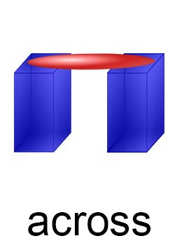
· space-across-space is space at right-angle in-relation-to another space.
· _SntxEngl: _SntxSubj:[There] _SntxVerb:{is} _SntxSbjc:[a bridge] _SntxSpace:[(across) the river].
· _SntxEngl: _SntxSubj:[The red bar] _SntxVerb:{is lying} _SntxSpace:[(across) the blue boxes].
[https://www.englishpage.com/prepositions/position_prepositions.htm]
===
"(adv) transversely, transversally (in a transverse manner) "they were cut transversely""
[http://wordnetweb.princeton.edu/perl/webwn?s=transversely]
"(adj) crosswise (in the shape of (a horizontal piece on) a cross)"
"(adv) across, crosswise, crossways (transversely) "the marble slabs were cut across""
[http://wordnetweb.princeton.edu/perl/webwn?s=crosswise]
name::
* McshEngl.space.relative.across!⇒spaceAcross,
* McshEngl.spaceAcross!=space.relative.across,
* McshEngl.spaceAcross.lagoElln!=κάθετα,
* McshEngl.spaceAcross.lagoZhon!=垂直-chuízhí,
* McshEngl.spaceRelaAcross!⇒spaceAcross,
* McshEngl.across-space!⇒spaceAcross,
* McshEngl.crosswise-space!⇒spaceAcross,
* McshEngl.space.across!⇒spaceAcross,
* McshEngl.transversely-space!⇒spaceAcross,
===
* McshEngl.RltnSpaceAcross!⇒spaceAcross,
* McshEngl.RltnSpaceRelaAcross!⇒spaceAcross,
* McshEngl.across!~ConjEngl!⇒spaceAcross,
* McshEngl.ConjEngl.across!⇒spaceAcross,
====== lagoSinagu:
* McshSngu.old.jeu-crosa-do!=spaceAcross,
====== lagoGreek:
* McshElln.επίθετο.εγκάρσιος!-ος-α-ο!=spaceAcross,
* McshElln.εγκάρσιος!-ος-α-ο!~AdjeElln!=spaceAcross,
* McshElln.κάθετα!~AdveElln!=spaceAcross,
====== lagoChinese:
* McshZhon.chuízhí-垂直!~AdveZhon!=spaceAcross,
* McshZhon.垂直-chuízhí!~AdveZhon!=spaceAcross,
space.rela.space.above
description::
× Mcsh-creation: {2026-10-04}
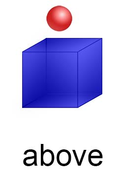
· _SntxEngl: _SntxSubj:[The red ball] _SntxVerb:{is} _SntxSpace:[(above) the blue box].
[https://www.englishpage.com/prepositions/position_prepositions.htm]
· _SntxZhon: 灯 在 我的桌子 上面。 :: _SntxSubj:[Dēng] _SntxSbjc=space:[(zài) [wǒ(de)zhuōzi] (shàngmiàn)]。 != The lamp is above my desk.
· _SntxZhon: 小鸟 在树的上方 飞。 :: _SntxSubj:[Xiǎo niǎo] _SntxSpace:[(zài) shù de shàngfāng] _SntxVerb:{fēi}. != [Little bird] [at tree's above] {flies}. !=The little bird is flying above the tree.
· _SntxZhon: 树上方的叶子 很绿。 :: _SntxSubj:[Shù shàngfāng de yèzǐ] _SntxSbjc:[hěn lǜ]. != The leaves above the tree are very green.
"$ differences 上面 vs 上方 in english the answer:
To answer your question directly in English:
**Both 上面 (shàngmiàn) and 上方 (shàngfāng) mean "above" or "on top of," but they differ in *physicality* and *abstraction*.**
Here is the breakdown:
**1. 上面 (shàngmiàn) – "On top of" / "Above" (Physical contact or close proximity)**
- **Usage:** Used when something is physically resting on a surface, OR when something is directly above something else with a clear, tangible vertical relationship.
- **Contact:** Often implies **touching** or being directly on the surface, but can also just mean "over" that spot.
- **Abstract:** Can mean "on the surface" (literally or figuratively), like "on the document" or "in the above text."
- **Examples:**
- *Book on the table:* 书在桌子**上面**。(The book is on top of the table.)
- *Write on paper:* 写在纸**上面**。(Write on the paper.)
- *Sky above head:* 头顶**上面**有飞机。(There is a plane directly above our heads.)
**2. 上方 (shàngfāng) – "The upper area" / "Higher up" (Distance, Space, or Official rank)**
- **Usage:** Used to describe a location that is **higher up in space**, but usually with some **distance** or in a defined area. It is more formal and less common in casual daily speech.
- **Contact:** Almost **never implies touching**. It refers to the space above something.
- **Abstract:** Often used in formal writing to mean "the higher authorities" (in government/companies), or "the upper part" of a picture/diagram.
- **Examples:**
- *Mountain peak:* 飞机飞过雪山**上方**。(The plane flew over the top of the snowy mountain — with space between.)
- *Diagram:* 请参见**上方**的图片。(Please see the picture *above* / in the upper part of this page.)
- *Government:* 由**上方**决定。(It will be decided by the *higher-ups* / superiors.)
---
**The Quick Cheat Sheet:**
| English | Chinese | When to use |
| :--- | :--- | :--- |
| **On top of (touching)** | 上面 | The cup is on the table. |
| **Directly above (close)** | 上面 | The light is above the desk. |
| **Up there / Higher space** | 上方 | The bird is flying high up in the sky. |
| **Upper part of a page** | 上方 | Look at the top of this document. |
| **The boss / Higher-up** | 上方 | My manager (the superior) told me. |
---
**The Most Important Difference:**
If you put a book **上面** the table, it is resting **on** the table.
If you put a book **上方** the table, it is floating **in the air** above the table (not touching it).
⭢ In 99% of daily life, Chinese people use **上面**. **上方** is reserved for formal writing, maps, diagrams, and talking about bosses."
[{2026-08-05 retrieved} https://chat.deepseek.com/a/chat/s/794bc4b3-8997-4f1b-8baa-8709635b5d85]
name::
* McshEngl.space.relative.above!⇒spaceAbove,
* McshEngl.spaceAbove!=space.relative.above,
* McshEngl.spaceAbove.lagoElln!=πάνω-από,
* McshEngl.spaceAbove.lagoZhon!=在..上方-zài..shàngfāng,
* McshEngl.spaceRelaAbove!⇒spaceAbove,
* McshEngl.above-space!⇒spaceAbove,
* McshEngl.over-space!⇒spaceAbove,
* McshEngl.space.above-space!⇒spaceAbove,
* McshEngl.space.over-space!⇒spaceAbove,
===
* McshEngl.above!~ConjEngl!⇒spaceAbove,
* McshEngl.ConjEngl.above!⇒spaceAbove,
* McshEngl.ConjEngl.over!⇒spaceAbove,
* McshEngl.over!~ConjEngl!⇒spaceAbove,
* McshEngl.RltnSpaceAbove!⇒spaceAbove,
* McshEngl.RltnSpaceRelaAbove!⇒spaceAbove,
====== lagoChinese:
* McshZhon.shàngmiàn-上面!=spaceAbove,
* McshZhon.上面-shàngmiàn!=spaceAbove,
* McshZhon.shàngfāng-上方!=spaceAbove,
* McshZhon.上方-shàngfāng!=spaceAbove,
====== lagoGreek:
* McshElln.πάνω!~AdveElln!=spaceAbove,
* McshElln.πάνω-από!~ConjElln!=spaceAbove,
space.rela.space.below
description::
× Mcsh-creation: {2026-10-04}
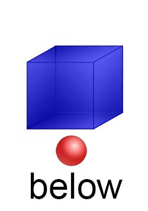
· _SntxEngl: _SntxSubj:[The red ball] _SntxVerb:{is} _SntxSpace:[(below) the blue box].
[https://www.englishpage.com/prepositions/position_prepositions.htm]
=== _syntaxElln: κάτω-από!~ConjElln!=RltnSpaceBelow:
· _SntxElln: είχε απαγορευτεί η κυκλοφορία κάτω από τη γέφυρα.
name::
* McshEngl.space.relative.below!⇒spaceBelow,
* McshEngl.spaceBelow!=space.relative.below,
* McshEngl.spaceBelow.lagoElln!=κάτω,
* McshEngl.spaceBelow.lagoZhon!=下面-xiàmiàn,
* McshEngl.below-space!⇒spaceBelow,
* McshEngl.beneath-space!⇒spaceBelow,
* McshEngl.space.below-space!⇒spaceBelow,
* McshEngl.space.beneath-space!⇒spaceBelow,
===
* McshEngl.RltnSpaceBelow!⇒spaceBelow,
* McshEngl.RltnSpaceRelaBelow!⇒spaceBelow,
* McshEngl.below!~ConjEngl!⇒spaceBelow,
* McshEngl.beneath!~ConjEngl!⇒spaceBelow,
* McshEngl.ConjEngl.below!⇒spaceBelow,
* McshEngl.ConjEngl.beneath!⇒spaceBelow,
====== lagoChinese:
* McshZhon.xiàmiàn-下面!~AdveZhon!=spaceBelow,
* McshZhon.下面-xiàmiàn!~AdveZhon!=spaceBelow,
====== lagoGreek:
* McshElln.κάτω-από!~ConjElln!=spaceBelow,
space.rela.space.on
description::
× Mcsh-creation: {2026-10-04}
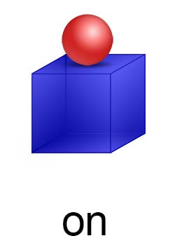
· _SntxEngl: _SntxSubj:[The red ball] _SntxVerb:{is} _SntxSpace:[(on) the blue box].
[https://www.englishpage.com/prepositions/position_prepositions.htm]
=== _syntaxZhon: 在..上-zài..shàng!~ConjZhon!=RltnSpaceOn:
· _SntxZhon: 在 桌子 上 。 :: zài zhuōzi shàng != on the table
name::
* McshEngl.space.relative.on!⇒spaceOn,
* McshEngl.spaceOn!=space.relative.on,
* McshEngl.spaceOn.lagoElln!=πάνω-στο,
* McshEngl.spaceOn.lagoZhon!=在..上-zài..shàng,
* McshEngl.spaceRelaOn!⇒spaceOn,
* McshEngl.on-space!⇒spaceOn,
* McshEngl.space.on-space!⇒spaceOn,
===
* McshEngl.on!~ConjEngl!⇒spaceOn,
* McshEngl.ConjEngl.on!⇒spaceOn,
* McshEngl.RltnSpaceOn!⇒spaceOn,
* McshEngl.RltnSpaceRelaOn!⇒spaceOn,
====== lagoChinese:
* McshZhon.zài..shàng-在..上!~ConjZhon!=spaceOn,
* McshZhon.在..上-zài..shàng!~ConjZhon!=spaceOn,
====== lagoGreek:
* McshElln.πάνω-στο!~ConjElln!=spaceOn,
space.rela.space.under
description::
× Mcsh-creation: {2026-10-04}
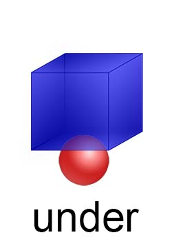
· _SntxEngl: _SntxSubj:[The red ball] _SntxVerb:{is} _SntxSpace:[(under) the blue box].
[https://www.englishpage.com/prepositions/position_prepositions.htm]
name::
* McshEngl.space.relative.under!⇒spaceUnder,
* McshEngl.spaceUnder!=space.relative.under,
* McshEngl.spaceRelaUnder!⇒spaceUnder,
* McshEngl.under-space!⇒spaceUnder,
* McshEngl.underneath-space!⇒spaceUnder,
* McshEngl.space.under-space!⇒spaceUnder,
* McshEngl.space.underneath-space!⇒spaceUnder,
===
* McshEngl.RltnSpaceUnder!⇒spaceUnder,
* McshEngl.RltnSpaceRelaUnder!⇒spaceUnder,
* McshEngl.under!~ConjEngl!⇒spaceUnder,
* McshEngl.ConjEngl.under!⇒spaceUnder,
* McshEngl.ConjEngl.underneath!⇒spaceUnder,
====== lagoGreek:
* McshElln.αποκάτω-ακριβώς!~AdveElln!=spaceUnder,
* McshElln.αποκάτω-σε-επαφή!~AdveElln!=spaceUnder,
space.rela.space.against
description::
× Mcsh-creation: {2026-10-04}
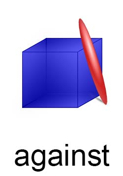
· _SntxEngl: _SntxSubj:[The red bar] _SntxVerb:{is lying} _SntxSpace:[(against) the blue box].
[https://www.englishpage.com/prepositions/position_prepositions.htm]
· _SntxEngl: _SntxVerb:{threw} _SntxObj1:[him] _SntxSpace:[(against) the wall].
name::
* McshEngl.space.relative.against!⇒spaceAgainst,
* McshEngl.spaceAgainst!=space.relative.against,
* McshEngl.spaceAgainst.lagoElln!=κόντρα,
* McshEngl.spaceAgainst.lagoZhon!=靠-kào,
* McshEngl.against-space!⇒spaceAgainst,
* McshEngl.spaceRelaAgainst!⇒spaceAgainst,
* McshEngl.space.against-space!⇒spaceAgainst,
===
* McshEngl.RltnSpaceAgainst!⇒spaceAgainst,
* McshEngl.RltnSpaceRelaAgainst!⇒spaceAgainst,
* McshEngl.against!~ConjEngl!⇒spaceAgainst,
* McshEngl.ConjEngl.against!⇒spaceAgainst,
====== lagoGreek:
* McshElln.κόντρα!~AdveElln!=spaceAgainst,
space.rela.space.opposite
description::
× Mcsh-creation: {2026-10-04}
· in a-space on the-other side of a-specific-space.
· _SntxEngl: _SntxSubj:[Their house] _SntxVerb:{is} _SntxSpace:[(opposite) the Red Cross Hospital].
· _SntxElla: _SntxVerb:_SntxVerb:{Ειστήκεσαν} _SntxSpace:[(ἀντὶ) τῶν πιτύων]. ==> _SntxVerb:{είχαν σταθεί} _SntxSpace:[(απέναντι από) τα πεύκα].
name::
* McshEngl.space.relative.opposite!⇒spaceOpposite,
* McshEngl.spaceOpposite!=space.relative.opposite,
* McshEngl.spaceOpposite.lagoElln!=απέναντι-από,
* McshEngl.spaceOpposite.lagoZhon!=对面-duìmiàn,
* McshEngl.spaceRelaOpposite!⇒spaceOpposite,
* McshEngl.opposite-space!⇒spaceOpposite,
* McshEngl.space.opposite-space!⇒spaceOpposite,
===
* McshEngl.RltnSpaceOpposite!⇒spaceOpposite,
* McshEngl.RltnSpaceRelaOpposite!⇒spaceOpposite,
* McshEngl.space.ConjElla.ἀντὶ!=spaceOpposite,
* McshEngl.space.ConjElln.απένταντι-από!=spaceOpposite,
* McshEngl.space.EnglConj.opposite!⇒spaceOpposite,
====== lagoGreek:
* McshElln.απέναντι-από!~ConjElln!=spaceOpposite,
====== lagoGreekAncient:
* McshElln.ἀντὶ!~ConjElla!=spaceOpposite,
space.rela.space.among
description::
× Mcsh-creation: {2026-10-04}
· _SntxEngl: _SntxSubj:[The red ball] _SntxVerb:{is} _SntxSpace:[(among) the blue box].
[https://www.englishpage.com/prepositions/position_prepositions.htm]
name::
* McshEngl.space.relative.among!⇒spaceAmong,
* McshEngl.spaceAmong!=space.relative.among,
* McshEngl.spaceAmong.lagoElln!=ανάμεσα-σε,
* McshEngl.spaceAmong.lagoZhon!=在..中间-zài..zhōngjiān,
* McshEngl.among-space!⇒spaceAmong,
* McshEngl.spaceRelaAmong!⇒spaceAmong,
* McshEngl.space.among-space!⇒spaceAmong,
===
* McshEngl.RltnSpaceAmong!⇒spaceAmong,
* McshEngl.RltnSpaceRelaAmong!⇒spaceAmong,
* McshEngl.among!~ConjEngl!⇒spaceAmong,
* McshEngl.ConjEngl.among!⇒spaceAmong,
===
* McshEngl.spaceBetween!⇒spaceAmong,
* McshEngl.RltnSpaceBetween!⇒spaceAmong,
* McshEngl.between!~ConjEngl!⇒spaceAmong,
* McshEngl.ConjEngl.between!⇒spaceAmong,
====== lagoGreek:
* McshElln.ανάμεσα!~AdveElln!=spaceAmong,
space.rela.space.around
description::
× Mcsh-creation: {2026-08-06}
· _SntxEngl: She looked at the papers around her. :: _SntxSubj:[She] _SntxVerb:{looked} _SntxDire:[(at) the papers] _SntxSpace:[(around) her]. [HarperCollins]
name::
* McshEngl.space.relative.space.around!⇒spaceAround,
* McshEngl.spaceAround!=space.relative.space.around,
===
* McshEngl.RltnSpaceAround!⇒spaceAround,
* McshEngl.around!~ConjEngl!⇒spaceAround,
* McshEngl.ConjEngl.around!⇒spaceAround,
space.rela.space.in-front-of
description::
× Mcsh-creation: {2026-10-04}
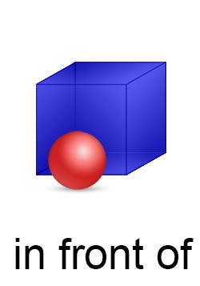
· _SntxEngl: _SntxSubj:[The red ball] _SntxVerb:{is} _SntxSpace:[(in-front-of) the blue box].
[https://www.englishpage.com/prepositions/position_prepositions.htm]
· _SntxEngl: _SntxSubj:[She] _SntxVerb:{walked} _SntxSpace:[[(ahead of) Helene] [(up) the steps] [(into) the hotel]]. [HarperCollins]
· _SntxZhon: 汽车前边没有人。 :: _SntxSubj:[Qìchē] _SntxSpace:[qiánbian] _SntxVerb:{méiyǒu} rén.。 != in front of the car there is no man.
name::
* McshEngl.space.relative.in-front-of!⇒spaceInfrontof,
* McshEngl.spaceInfrontof!=space.relative.in-front-of,
* McshEngl.spaceInfrontof.lagoElln!=μπροστά-από,
* McshEngl.spaceInfrontof.lagoZhon!=qián-前,
* McshEngl.space.ahead-of--space!⇒spaceInfrontof,
* McshEngl.space.in-front-of-space!⇒spaceInfrontof,
* McshEngl.spaceAheadof!⇒spaceInfrontof,
===
* McshEngl.RltnSpaceInfrontof!⇒spaceInfrontof,
* McshEngl.RltnSpaceRelaInfrontof!⇒spaceInfrontof,
* McshEngl.ahead-of!~ConjEngl!⇒spaceInfrontof,
* McshEngl.ConjEngl.ahead-of!⇒spaceInfrontof,
* McshEngl.ConjEngl.in-front-of!⇒spaceInfrontof,
* McshEngl.in-front-of!~ConjEngl!⇒spaceInfrontof,
* McshEngl.RltnSpaceAheadof!⇒spaceInfrontof,
====== lagoChinese:
* McshEngl.AdveZhon.qiánbian-前边!=spaceInfrontof,
* McshZhon.qiánbian-前边!~AdveZhon!=spaceInfrontof,
* McshZhon.前边-qiánbian!~AdveZhon!=spaceInfrontof,
====== lagoGreek:
* McshElln.επίρρημα.μπροστά!=spaceInfrontof,
* McshElln.μπροστά!~AdveElln!=spaceInfrontof,
space.rela.space.behind
description::
× Mcsh-creation: {2024-12-12}
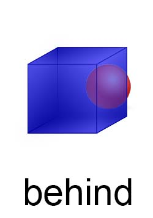
name::
* McshEngl.space.relative.behind!⇒spaceBehind,
* McshEngl.spaceBehind!=space.relative.behind,
* McshEngl.spaceBehind.lagoElln!=πίσω-από,
* McshEngl.spaceBehind.lagoElln!=hòu-后,
* McshEngl.behide-space!⇒spaceBehind,
* McshEngl.space.behide!⇒spaceBehind,
* McshEngl.spaceRelaBehind!⇒spaceBehind,
===
* McshEngl.RltnSpaceBehind!⇒spaceBehind,
* McshEngl.RltnSpaceRelaBehind!⇒spaceBehind,
====== lagoChinese:
* McshZhon.hòu-后!~AdveZhon!=spaceBehind,
* McshZhon.后-hòu!~AdveZhon!=spaceBehind,
space.rela.space.beside
description::
× Mcsh-creation: {2026-10-04}
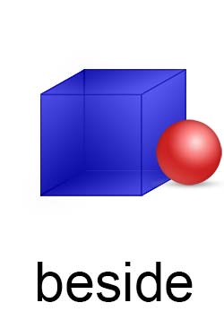
· _SntxEngl: _SntxSubj:[The red ball] _SntxVerb:{is} _SntxSpace:[(beside) the blue box].
[https://www.englishpage.com/prepositions/position_prepositions.htm]
=== _syntaxZhon: zài..pángbiān-在..旁边!~ConjZhon!=RltnSpaceBeside:
· _SntxZhon: Walmart 在 我家 旁边 。 :: Walmart zài wǒ jiā pángbiān. != Walmart is next to my house.
name::
* McshEngl.RltnSpaceBeside,
* McshEngl.beside-space!⇒RltnSpaceBeside,
* McshEngl.next-to-space!⇒RltnSpaceBeside,
* McshEngl.space.beside-space!⇒RltnSpaceBeside,
* McshEngl.space.beside.lagoElln!=δίπλα!⇒RltnSpaceBeside,
* McshEngl.space.beside.lagoZhon!=在..旁边-zài..pángbiān!⇒RltnSpaceBeside,
* McshEngl.space.next-to-space!⇒RltnSpaceBeside,
===
* McshEngl.beside!~ConjEngl!⇒RltnSpaceBeside,
* McshEngl.ConjEngl.beside!⇒RltnSpaceBeside,
* McshEngl.ConjEngl.next-to!⇒RltnSpaceBeside,
====== lagoChinese:
* McshZhon.zài..pángbiān-在..旁边!~ConjZhon!=RltnSpaceBeside,
* McshZhon.在..旁边-zài..pángbiān!~ConjZhon!=RltnSpaceBeside,
====== lagoGreek:
* McshElln.δίπλα-στο!~ConjElln!=RltnSpaceBeside,
space.rela.space.beyond
description::
× Mcsh-creation: {2026-10-04}
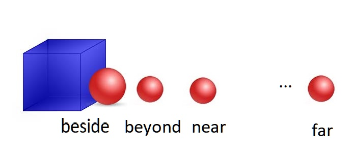
· space relative beyond another space.
name::
* McshEngl.space.relative.beyond!⇒spaceBeyond,
* McshEngl.spaceBeyond!=space.relative.beyond,
* McshEngl.spaceBeyond.lagoElln!=πέρα-από,
* McshEngl.spaceBeyond.lagoZhon!=在..之外-zài..zhīwài,
* McshEngl.beyond-space!⇒spaceBeyond,
* McshEngl.space.beyond-space!⇒spaceBeyond,
* McshEngl.spaceRelaBeyond!⇒spaceBeyond,
===
* McshEngl.RltnSpaceBeyond!⇒spaceBeyond,
* McshEngl.RltnSpaceRelaBeyond!⇒spaceBeyond,
* McshEngl.beyond!~ConjEngl!⇒spaceBeyond,
* McshEngl.ConjEngl.beyond!⇒spaceBeyond,
====== lagoGreek:
* McshElln.παραπέρα!=spaceBeyond,
space.rela.space.near
description::
× Mcsh-creation: {2026-10-04}
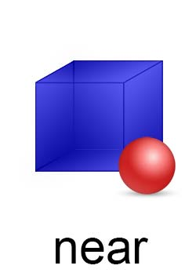
· _SntxEngl: _SntxSubj:[The red ball] _SntxVerb:{is} _SntxSpace:[(near) the blue box].
[https://www.englishpage.com/prepositions/position_prepositions.htm]
· _SntxEngl: _SntxSubj:[He] _SntxVerb:{lives} _SntxSpace:[(by) a train station].
=== jìn-近:
· _SntxZhon: 我 家 离 公司 很 近。 :: _SntxSubj:[Wǒ jiā (lí) gōngsī] _SntxSbjc:[hěn jìn]. != My house is close to my office.
name::
* McshEngl.space.relative.near!⇒spaceNear,
* McshEngl.spaceNear!=space.relative.near,
* McshEngl.spaceNear.lagoElln!=κοντά,
* McshEngl.spaceNear.lagoZhon!=近-jìn,
* McshEngl.space.by-space!⇒spaceNear,
* McshEngl.space.near-space!⇒spaceNear,
* McshEngl.spaceRelaNear!⇒spaceNear,
===
* McshEngl.RltnSpaceNear!⇒spaceNear,
* McshEngl.RltnSpaceRelaNear!⇒spaceNear,
* McshEngl.by!~ConjEngl!⇒spaceNear,
* McshEngl.near!~ConjEngl!⇒spaceNear,
* McshEngl.ConjEngl.by!⇒spaceNear,
* McshEngl.ConjEngl.near!⇒spaceNear,
====== lagoChinese:
* McshZhon.fùjìn-附近!=spaceNear,
* McshZhon.附近-fùjìn!=spaceNear,
* McshZhon.jìn-近!=spaceNear,
* McshZhon.近-jìn!=spaceNear,
====== lagoGreek:
* McshElln.κοντά!~AdveElln!=spaceNear,
* McshElln.κοντά-σε!~ConjElln!=spaceNear,
space.rela.space.far-from
description::
× Mcsh-creation: {2026-10-04}
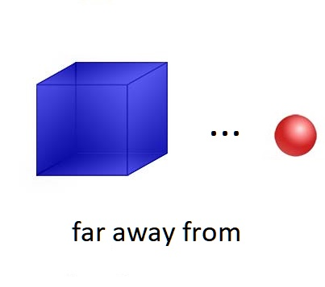
· _SntxEngl: _SntxSubj:[The red ball] _SntxVerb:{is} _SntxSpace:[(far-away-from) the blue box].
· _SntxEngl: _SntxSubj:[The Great Barrier Reef, _SntxSpace:[(off) the northeast coast]], _SntxVerb:{is renouned} _SntxOther:[(for) skindiving, and big game fishing].
· _SntxEngl: _SntxSubj:[I] _SntxVerb:{happened} _SntxObj1:[upon the most wonderful bakery] _SntxSpace:[not very [(far from) here]]. [WordNet 2.0]
=== yuǎn-远:
· _SntxZhon: 美国 离 中国 很 远。 :: _SntxSubj:[Měiguó (lí) Zhōngguó] _SntxSbjc:[hěn yuǎn]. != The USA is far from China.
name::
* McshEngl.space.relative.far-from!⇒spaceFar,
* McshEngl.spaceFar!=space.relative.far-from,
* McshEngl.spaceFar.lagoElln!=μακριά,
* McshEngl.spaceFar.lagoZhon!=远-yuǎn,
* McshEngl.far-away-from-space!⇒spaceFar,
* McshEngl.space.far-away-from-space!⇒spaceFar,
* McshEngl.space.far-from-space!⇒spaceFar,
===
* McshEngl.RltnSpaceFar!⇒spaceFar,
* McshEngl.RltnSpaceRelaFar!⇒spaceFar,
* McshEngl.far-away-from!~ConjEngl!⇒spaceFar,
* McshEngl.ConjEngl.far-away-from!⇒spaceFar,
* McshEngl.far-from!~ConjEngl!⇒spaceFar,
* McshEngl.ConjEngl.far-from!⇒spaceFar,
* McshEngl.off!~ConjEngl!⇒spaceFar,
* McshEngl.ConjEngl.off!⇒spaceFar,
====== lagoChinese:
* McshEngl.AdjeZhon.yuǎn-远!=spaceFar,
* McshZhon.yuǎn-远!~AdjeZhon!=spaceFar,
* McshZhon.远-yuǎn!~AdjeZhon!=spaceFar,
space.rela.space.inside
description::
× Mcsh-creation: {2026-10-04}
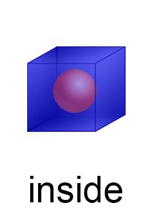
· _SntxEngl: _SntxSubj:[The red ball] _SntxVerb:{is} _SntxSpace:[(inside) the blue box].
[https://www.englishpage.com/prepositions/position_prepositions.htm]
· _SntxEngl: _SntxSubj:[Clients] _SntxVerb:{are entertained} _SntxSpace:[(within) private dining rooms]. [HarperCollins]
name::
* McshEngl.space.relative.inside!⇒spaceInside,
* McshEngl.spaceInside!=space.relative.inside,
* McshEngl.spaceInside.lagoElln!=μέσα,
* McshEngl.spaceInside.lagoZhon!=lǐ-里,
* McshEngl.spaceInside.lagoElln!=εσωτερικά,
* McshEngl.spaceInside.lagoZhon!=在..里面-zài..lǐmiàn,
* McshEngl.inside-space!⇒spaceInside,
* McshEngl.space.inside-space!⇒spaceInside,
* McshEngl.spaceRelaInside!⇒spaceInside,
===
* McshEngl.RltnSpaceInside!⇒spaceInside,
* McshEngl.RltnSpaceRelaInside!⇒spaceInside,
* McshEngl.inside!~ConjEngl!⇒spaceInside,
* McshEngl.ConjEngl.inside!⇒spaceInside,
* McshEngl.within!~ConjEngl!⇒spaceInside,
* McshEngl.ConjEngl.within!⇒spaceInside,
====== lagoSinagu:
* McshSngu.old.jeu-esa-do!=spaceInside,
space.rela.space.outside
description::
× Mcsh-creation: {2026-10-04}
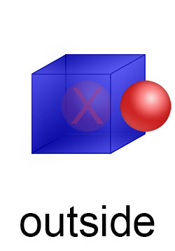
· _SntxEngl: _SntxSubj:[The red ball] _SntxVerb:{is} _SntxSpace:[(outside) the blue box].
[https://www.englishpage.com/prepositions/position_prepositions.htm]
name::
* McshEngl.space.relative.outside!⇒spaceOutside,
* McshEngl.spaceOutside!=space.relative.outside,
* McshEngl.spaceOutside.lagoElln!=έξω,
* McshEngl.spaceOutside.lagoZhon!=在..外面-zài..wàimiàn,
* McshEngl.outside-space!⇒spaceOutside,
* McshEngl.space.outside-space!⇒spaceOutside,
* McshEngl.spaceRelaOutside!⇒spaceOutside,
===
* McshEngl.RltnSpaceOutside!⇒spaceOutside,
* McshEngl.RltnSpaceRelaOutside!⇒spaceOutside,
* McshEngl.outside!~ConjEngl!⇒spaceOutside,
* McshEngl.ConjEngl.outside!⇒spaceOutside,
====== lagoSinagu:
* McshSngu.old.jeu-eza-do!=spaceOutside,
space.rela.space.in
description::
× Mcsh-creation: {2026-10-04}
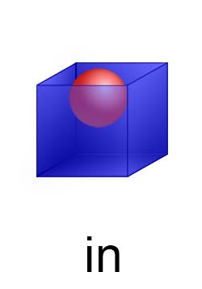
· _SntxEngl: _SntxSubj:[The red ball] _SntxVerb:{is} _SntxSpace:[(in) the blue box].
[https://www.englishpage.com/prepositions/position_prepositions.htm]
=== _syntaxZhon: zài..lǐ-在..里!~ConjZhon!=RltnSpaceIn:
· _SntxZhon: 你 的 手机 在 包 里 吗 ？ :: Nǐ de shǒujī zài bāo lǐ ma? != Is your cell phone in the bag?
name::
* McshEngl.space.relative.in!⇒spaceIn,
* McshEngl.spaceIn!=space.relative.in,
* McshEngl.spaceIn.lagoElln!=μέσα,
* McshEngl.spaceIn.lagoZhon!=在..里-zài..lǐ,
* McshEngl.spaceRelaIn!⇒spaceIn,
* McshEngl.in-space!⇒spaceIn,
* McshEngl.space.in-space!⇒spaceIn,
===
* McshEngl.RltnSpaceIn!⇒spaceIn,
* McshEngl.RltnSpaceRelaIn!⇒spaceIn,
* McshEngl.in!~ConjEngl!⇒spaceIn,
* McshEngl.ConjEngl.in!⇒spaceIn,
* McshZhon.liáncí.zài..lǐ-在..里!=spaceIn,
====== lagoChinese:
* McshZhon.zài..lǐ-在..里!~ConjZhon!=spaceIn,
* McshZhon.在..里-zài..lǐ!~ConjZhon!=spaceIn,
====== lagoGreek:
* McshElln.μέσα-στο!~ConjElln!=spaceIn,
space.rela.current.elsewhere
description::
× Mcsh-creation: {2026-10-04}
· elsewhere is space different than the-space of context.
name::
* McshEngl.space.relative.current.elsewhere!⇒spaceElsewhere,
* McshEngl.spaceElsewhere!=space.relative.current.elsewhere,
* McshEngl.spaceElsewhere.lagoElln!=αλλού,
* McshEngl.spaceElsewhere.lagoZhon!=在..别处-zài..biéchù,
* McshEngl.elsewhere-space!⇒spaceElsewhere,
* McshEngl.space.elsewhere!⇒spaceElsewhere,
* McshEngl.spaceRelaElsewhere!⇒spaceElsewhere,
===
* McshEngl.RltnSpaceElsewhere!⇒spaceElsewhere,
* McshEngl.RltnSpaceRelaElsewhere!⇒spaceElsewhere,
=== langoGreek:
* McshElln.αλλού!~advbElln!=spaceElsewhere,
space.rela.current.left
description::
× Mcsh-creation: {2026-10-04}
· left-space is space on the-left-hand of the-person in context.
name::
* McshEngl.space.relative.current.left!⇒spaceLeft,
* McshEngl.spaceLeft!=space.relative.current.left,
* McshEngl.spaceLeft.lagoElln!=αριστερά,
* McshEngl.spaceLeft.lagoZhon!=在..左边-zài..zuǒbiān,
* McshEngl.spaceRelaLeft!⇒spaceLeft,
* McshEngl.left-space!⇒spaceLeft,
* McshEngl.space.left!⇒spaceLeft,
===
* McshEngl.RltnSpaceLeft!⇒spaceLeft,
* McshEngl.RltnSpaceRelaLeft!⇒spaceLeft,
====== lagoChinese:
* McshZhon.zuǒ-左!=spaceLeft,
* McshZhon.左-zuǒ!=spaceLeft,
====== lagoEsperanto:
* McshEspo.maldekstren!=spaceLeft,
=== langoGreek:
* McshElln.επίρρημα.αριστερά!=spaceLeft,
* McshElln.αριστερά!~AdveElln!=spaceLeft,
space.rela.current.right
description::
× Mcsh-creation: {2026-10-04}
· right-space is space on the-right-hand of the-person in context.
name::
* McshEngl.space.relative.current.right!⇒spaceRight,
* McshEngl.spaceRight!=space.relative.current.right,
* McshEngl.spaceRight.lagoElln!=δεξιά,
* McshEngl.spaceRight.lagoZhon!=在..右边-zài..yòubiān,
* McshEngl.spaceRelaRight.lagoElln!=δεξιά!⇒spaceRight,
* McshEngl.right-space!⇒spaceRight,
* McshEngl.space.right!⇒spaceRight,
===
* McshEngl.RltnSpaceRight!⇒spaceRight,
* McshEngl.RltnSpaceRelaRight!⇒spaceRight,
====== lagoChinese:
* McshZhon.yòu-右!=spaceRight,
* McshZhon.右-yòu!=spaceRight,
====== lagoEsperanto:
* McshEspo.dekstren!=spaceRight,
=== langoGreek:
* McshElln.επίρρημα.δεξιά!=spaceRight,
* McshElln.δεξιά!~AdveElln!=spaceRight,
space.rela.current.east
description::
× Mcsh-creation: {2026-10-04}
· east-space is definiteNo space relative to current-space and the-direction of the-sunrise.
· _SntxZhon: 太阳 从 东边 升起。:: _SntxSubj:[Tàiyang] _SntxSpace:[(cóng) dōngbiān] _SntxVerb:{shēngqǐ}. != The sun rises from the east.
name::
* McshEngl.space.relative.current.east!⇒spaceEast,
* McshEngl.spaceEast!=space.relative.current.east,
* McshEngl.spaceEast.lagoElln!=ανατολικά,
* McshEngl.spaceEast.lagoZhon!=在..东边-zài..dōngbiān,
* McshEngl.east-space!⇒spaceEast,
* McshEngl.space.east!⇒spaceEast,
* McshEngl.spaceRelaEast!⇒spaceEast,
===
* McshEngl.RltnSpaceEast!⇒spaceEast,
* McshEngl.RltnSpaceRelaEast!⇒spaceEast,
space.rela.current.west
description::
× Mcsh-creation: {2026-10-04}
· west-space is definiteNo space relative to current-space and the-direction of the-sunset.
name::
* McshEngl.space.relative.current.west!⇒spaceWest,
* McshEngl.spaceWest!=space.relative.current.west,
* McshEngl.spaceWest.lagoElln!=δυτικά,
* McshEngl.spaceWest.lagoZhon!=在..西边-zài..xībiān,
* McshEngl.space.west!⇒spaceWest,
* McshEngl.spaceRelaWest!⇒spaceWest,
* McshEngl.west-space!⇒spaceWest,
===
* McshEngl.RltnSpaceWest!⇒spaceWest,
* McshEngl.RltnSpaceRelaWest!⇒spaceWest,
space.rela.current.north
description::
× Mcsh-creation: {2026-10-04}
· north-space is definiteNo space relative to current-space and the-direction left of the-sunrise.
name::
* McshEngl.space.relative.current.north!⇒spaceNorth,
* McshEngl.spaceNorth!=space.relative.current.north,
* McshEngl.spaceNorth.lagoElln!=βοράς!ο,
* McshEngl.spaceNorth.lagoZhon!=北边-běibiān,
* McshEngl.north-space!⇒spaceNorth,
* McshEngl.space.north!⇒spaceNorth,
===
* McshEngl.RltnSpaceNorth!⇒spaceNorth,
* McshEngl.RltnSpaceRelaNorth!⇒spaceNorth,
====== lagoGreek:
* McshElln.βοράς!ο!=spaceNorth,
* McshElln.επίθετο.βόρειος!-ος-α-ο!=spaceNorth,
* McshElln.βόρεια!~AdveElln!=spaceNorth,
* McshElln.βόρειος!-ος-α-ο!~AdjeElln!=spaceNorth,
====== lagoChinese:
* McshZhon.běifāng-北方!=spaceNorth,
* McshZhon.北方-běifāng!=spaceNorth,
syntax::
· _SntxZhon: 北京 在 中国 北方。 :: _SntxSubj:[Běijīng] _SntxSbjc:[(zài) zhōngguó běifāng]. != Beijing is in China's north.
space.rela.current.south
description::
× Mcsh-creation: {2026-10-04}
· south-space is definiteNo-space relative to current-space and the-direction right of the-sunrise.
name::
* McshEngl.space.relative.current.south!⇒spaceSouth,
* McshEngl.spaceSouth!=space.relative.current.south,
* McshEngl.spaceSouth.lagoElln!=νότια,
* McshEngl.spaceSouth.lagoZhon!=在..南边-zài..nánbiān,
* McshEngl.south-space!⇒spaceSouth,
* McshEngl.space.south!⇒spaceSouth,
===
* McshEngl.RltnSpaceSouth!⇒spaceSouth,
* McshEngl.RltnSpaceRelaSouth!⇒spaceSouth,
space.rela.direction
description::
× Mcsh-creation: {2026-10-04}
· space-direction is the-sequence of two spaces, of a-moving entity.
===
"(adj) oriented, orientated (adjusted or located in relation to surroundings or circumstances; sometimes used in combination) "the house had its large windows oriented toward the ocean view"; "helping freshmen become oriented to college life"; "the book is value-oriented throughout""
[http://wordnetweb.princeton.edu/perl/webwn?s=oriented]
name::
* McshEngl.space_direction,
* McshEngl.space-direction!⇒space_direction,
* McshEngl.space.relative.direction!⇒space_direction,
relation of space_direction
description::
× Mcsh-creation: {2026-10-04}
· space-direction-relation is the-relation between the-motion and the-space-direction of a-moving entity.
· with 'moving' verbs: go, is-rolling, is-bounching, ...
name::
* McshEngl.relation-of--space-direction!⇒RltnDire,
* McshEngl.RltnDire!=relation-of--space-direction,
* McshEngl.space-direction'relation!⇒RltnDire,
* McshEngl.space_direction'relation!⇒RltnDire,
* McshEngl.RltnDire!=space-direction'relation,
* McshEngl.space-direction-relation!⇒RltnDire,
* McshEngl.RltnSpaceDire!⇒RltnDire,
* McshEngl.syntax.space.direction!⇒RltnDire,
* McshEngl.SntxSpaceDire!⇒RltnDire,
GENERIC-SPECIFIC-TREE of space_direction
description::
× Mcsh-creation: {2026-10-04}
name::
* McshEngl.space_direction'generic-specific-tree,
* McshEngl.space_direction'specific-generic-tree,
generic-tree::
* McshEngl.space_direction_Gntr,
===
* ... entity_Gntr,
specific-tree::
* McshEngl.RltnDire.specific,
* McshEngl.RltnDire_Sptr,
* McshEngl.space_direction.specific,
* McshEngl.space_direction_Sptr,
* McshEngl.ConjEngl.against!⇒RltnDireAgainst,
* McshEngl.ConjEngl.along!⇒RltnDireAlong,
* McshEngl.ConjEngl.around!⇒RltnDireAround,
* McshEngl.ConjEngl.from!⇒RltnDireFrom,
* McshEngl.ConjEngl.in!⇒RltnDireInto,
* McshEngl.ConjEngl.into!⇒RltnDireInto,
* McshEngl.ConjEngl.off-of!⇒RltnDireOffof,
* McshEngl.ConjEngl.onto!⇒RltnDireOnto,
* McshEngl.ConjEngl.out-of!⇒RltnDireOutof,
* McshEngl.ConjEngl.over!⇒RltnDireOver,
* McshEngl.ConjEngl.under!⇒RltnDireUnder,
* McshEngl.ConjEngl.up!⇒RltnDireUp,
* McshEngl.from-space-direction,
* McshEngl.into!~ConjEngl!=RltnDireInto,
* McshEngl.RltnDireFrom,
* McshEngl.space-direction.from,
* McshEngl.space-direction.into,
====== lagoGreek:
* McshElln.από!~ConjElln!=RltnDireFrom,
====== lagoTurkish:
* McshTurk.-den!~ablative-suffix!=RltnDireFrom,
===
* forward,
* backward,
* leftward,
* rightward,
* upward,
* downward,
* against,
* through,
* around,
* along,
space.rela.dire.across
description::
× Mcsh-creation: {2026-10-04}
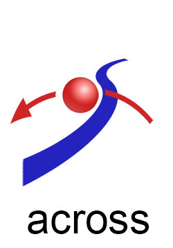
· _SntxEngl: _SntxSubj:[The red ball] _SntxVerb:{bounce} _SntxDire:[(across) the blue line].
[https://www.englishpage.com/prepositions/direction_prepositions.htm]
name::
* McshEngl.space.relative.direction.across!⇒direAcross,
* McshEngl.direAcross!=space.relative.direction.across,
* McshEngl.across-space-direction!⇒direAcross,
* McshEngl.space-direction.across!⇒direAcross,
===
* McshEngl.RltnDireAcross!⇒direAcross,
* McshEngl.across!~ConjEngl!⇒direAcross,
* McshEngl.ConjEngl.across!⇒direAcross,
space.rela.dire.away-from
description::
× Mcsh-creation: {2026-10-04}
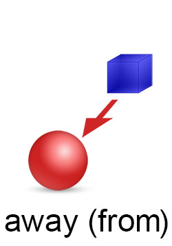
· _SntxEngl: _SntxSubj:[The red ball] _SntxVerb:{is rolling} _SntxDire:[(away from) the blue box].
· _SntxEngl: He walked away from me. has object "me"
· _SntxEngl: He walked away. no object
[https://www.englishpage.com/prepositions/direction_prepositions.htm]
name::
* McshEngl.space.relative.direction.away-from!⇒direAwayfrom,
* McshEngl.direAwayfrom!=space.relative.direction.away-from,
* McshEngl.away-from-space-direction!⇒direAwayfrom,
* McshEngl.space-direction.away-from!⇒direAwayfrom,
===
* McshEngl.away-from!~ConjEngl!⇒direAwayfrom,
* McshEngl.ConjEngl.away-from!⇒direAwayfrom,
* McshEngl.RltnDireAwayfrom!⇒direAwayfrom,
space.rela.dire.from..to
description::
× Mcsh-creation: {2026-10-04}
· _SntxZhon: _SntxSubj:[她] _SntxDire:[从 北京 到 西安] _SntxVerb:{来} _SntxGoal:[旅游] != She came from Beijing to Xi’an for traveling.
· _SntxZhon: _SntxSubj:[我] _SntxManner:[(坐)飞机] _SntxDire:[(从)[上海](到)[北京]]_SntxVerb:{去}。Wǒ zuò fēijī cóng shànghǎi dào běijīng qù. != [I] [by plain] [from Shanghai to Beijing] {go}.
name::
* McshEngl.space.relative.direction.from..to!⇒direFromTo,
* McshEngl.direFromTo!=space.relative.direction.from..to,
* McshEngl.direFromTo.lagoElln!=από..προς,
* McshEngl.direFromTo.lagoZhon!=从..到-cónɡ..dào,
* McshEngl.space-direction.from..to!⇒direFromTo,
===
* McshEngl.RltnDireFromTo!⇒direFromTo,
* McshEngl.from..to--direction!⇒direFromTo,
* McshEngl.from..to!~ConjEngl!⇒direFromTo,
====== lagoChinese:
* McshZhon.cónɡ..dào-从..到!~ConjZhon!=direFromTo,
* McshZhon.从..到-cónɡ..dào!~ConjZhon!=direFromTo,
space.rela.dire.from-speaker
description::
× Mcsh-creation: {2026-10-04}
· relative direction from speaker.
name::
* McshEngl.space.relative.direction.from-speaker!⇒direFromspeaker,
* McshEngl.direFromspeaker!=space.relative.direction.from-speaker,
* McshEngl.space-direction.from-speaker!⇒direFromspeaker,
===
* McshEngl.RltnDireFromspeaker!⇒direFromspeaker,
====== lagoChinese:
* McshZhon.qù-去!=direFromspeaker,
* McshZhon.去-qù!=direFromspeaker,
space.rela.dire.through
description::
× Mcsh-creation: {2026-10-04}
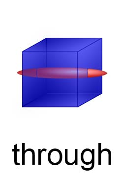
· _SntxEngl: _SntxSubj:[The red ball] _SntxVerb:{is running} _SntxSpace:[(through) the blue box].
[https://www.englishpage.com/prepositions/position_prepositions.htm]
name::
* McshEngl.space.relative.direction.through!⇒direThrough,
* McshEngl.direThrough!=space.relative.direction.through,
* McshEngl.direThrough.lagoElln!=ανάμεσα,
* McshEngl.direThrough.lagoZhon!=穿过-chuānguò,
* McshEngl.through-space!⇒direThrough,
* McshEngl.space-direction.through!⇒direThrough,
===
* McshEngl.RltnDireThrough!⇒direThrough,
* McshEngl.through!~ConjEngl!⇒direThrough,
* McshEngl.ConjEngl.through!⇒direThrough,
* McshEngl.ConjEngl.throughout!⇒direThrough,
space.rela.dire.towards
description::
× Mcsh-creation: {2026-10-04}
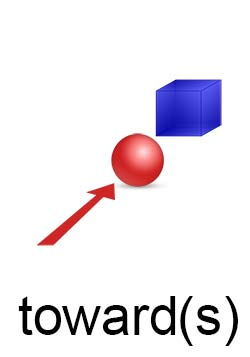
· _SntxEngl: _SntxSubj:[The red ball] _SntxVerb:{is rolling} _SntxDire:[(towards) the blue box].
[https://www.englishpage.com/prepositions/direction_prepositions.htm]
· _SntxEngl: [The crowds {became} violent] [(and) [{threw} [petrol bombs] [(at) the police]]]. [HarperCollins]
name::
* McshEngl.space.relative.direction.towards!⇒direTowards,
* McshEngl.direTowards!=space.relative.direction.towards,
* McshEngl.direTowards.lagoElln!=προς,
* McshEngl.to-space-direction!⇒direTowards,
* McshEngl.towards-space-direction!⇒direTowards,
* McshEngl.space-direction.at!⇒direTowards,
* McshEngl.space-direction.to!⇒direTowards,
* McshEngl.space-direction.towards!⇒direTowards,
===
* McshEngl.RltnDireTowards!⇒direTowards,
* McshEngl.to!~ConjEngl!⇒direTowards,
* McshEngl.ConjEngl.to!⇒direTowards,
* McshEngl.towards!~ConjEngl!⇒direTowards,
* McshEngl.ConjEngl.towards!⇒direTowards,
space.rela.dire.towards-speaker
description::
× Mcsh-creation: {2026-10-04}
· _SntxZhon: [他] _SntxVerb:{走}[上][來] {了}。 tā zǒu shàng lái le. != [he] {walked} [up] [towards-me].
name::
* McshEngl.space.relative.direction.towards-speaker!⇒direTowardsspeaker,
* McshEngl.direTowardsspeaker!=space.relative.direction.towards-speaker,
* McshEngl.space-direction.towards-speaker!⇒direTowardsspeaker,
===
* McshEngl.RltnDireTowardsSpeaker!⇒direTowardsspeaker,
====== lagoChinese:
* McshZhon.lái-来-(來)!=direTowardsspeaker,
* McshZhon.来-(來)-lái!=direTowardsspeaker,
space.rela.dire.downward
description::
× Mcsh-creation: {2026-10-04}
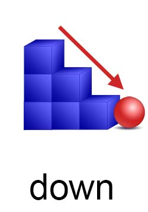
· _SntxEngl: _SntxSubj:[The red ball] _SntxVerb:[is rolling] _SntxDire:[(down) the blue stairs].
[https://www.englishpage.com/prepositions/direction_prepositions.htm]
· _SntxEngl: _SntxSubj:[He] _SntxVerb:{arranged} _SntxObj1:[for me] _SntxObj1:[to _SntxVerb:{go} _SntxDire:[(down to) London] _SntxTime:[one day a week]]. [HarperCollins]
name::
* McshEngl.direDown,
* McshEngl.space.relative.direction.downward!⇒direDown,
* McshEngl.down-space-direction!⇒direDown,
* McshEngl.space-direction.downward!⇒direDown,
===
* McshEngl.RltnDireDown!⇒direDown,
* McshEngl.direDown.lagoElln!=προς-τα-κάτω,
* McshEngl.down!~ConjEngl!⇒direDown,
* McshEngl.ConjEngl.down!⇒direDown,
* McshEngl.down-to!~ConjEngl!⇒direDown,
* McshEngl.ConjEngl.down-to!⇒direDown,
space.rela.dire.leftward
description::
× Mcsh-creation: {2025-12-01}
"· difference of left vs leftward:
"Here’s the clear difference:
### **Left**
* **Primary use:** *Noun* or *adjective*
* **Meaning:** Refers to the direction or the side (opposite of right).
* **Examples:**
* *Turn left at the traffic light.* (adverb)
* *The left side of the room is brighter.* (adjective)
* *Take a left at the corner.* (noun)
### **Leftward**
* **Primary use:** *Adverb* or *adjective*
* **Meaning:** Indicates movement **toward the left** or orientation **facing the left**.
* Usually implies **motion or directionality**.
* Examples:
* *The wind blew the papers leftward.* (adverb — motion toward the left)
* *A leftward shift in opinion occurred.* (adjective — directional orientation)
### **Simple distinction**
* **Left** = position or general direction.
* **Leftward** = movement **toward** the left; more formal or descriptive.
### Quick comparison
| Word | Part of speech | Implies motion? | Example |
| **left** | adj./adv./noun | sometimes (but can also be static) | *Turn left.* |
| **leftward** | adj./adv. | **yes** (movement or orientation) | *She stepped leftward.* |
If you want, I can also explain **leftwards** (British variant)."
[{2025-12-01 retrieved} https://chatgpt.com/c/692db1bb-7984-832c-a5f5-1d2d6300746d]
name::
* McshEngl.space.relative.direction.leftward!⇒direLeft,
* McshEngl.direLeft!=space.relative.direction.leftward,
* McshEngl.direLeft.lagoElln!=προς-τα-αριστερά,
* McshEngl.space.-direction.leftward!⇒direLeft,
===
* McshEngl.RltnDireLeft!⇒direLeft,
space.rela.dire.opposite
description::
× Mcsh-creation: {2025-12-17}
"Of course. The term **"opposite direction"** has both a literal, geometric meaning and several common figurative meanings.
### Core Definition
**Opposite direction** refers to a course or path that is oriented at 180 degrees to another, moving directly away from a reference point.
---
### 1. Literal/Geometric Meaning
In physics, navigation, or everyday space:
* **Two points or vectors** that are directly antiparallel.
* **Movement** that is directly away from a starting point or from each other.
**Example:** "If north is the reference direction, then south is the **opposite direction**."
---
### 2. Figurative/Common Usage Meanings
**a) Conflicting Aims or Purposes**
⭢ * "The company's marketing and legal teams are pulling in **opposite directions** on this ad campaign."
**b) Divergent Results or Outcomes**
⭢ * "The new policy had the **opposite direction** of what was intended; it made the problem worse."
**c) Reverse Course (Change to the Contrary)**
⭢ * "After the criticism, the government did a U-turn and went in the **opposite direction** with its legislation."
---
### Key Concept: Frame of Reference
The definition always depends on a **frame of reference**. "Opposite" only has meaning relative to a stated or implied starting direction.
* **Reference:** "Away from the city center."
* **Opposite Direction:** "Toward the city center."
---
### Synonyms
* Contrary way
* Reverse course
* Antiparallel path
* Conflicting path
### Antonyms
* Same direction
* Parallel course
* Convergent path
In short, **"opposite direction"** fundamentally means **directly away from a reference line or intention**, whether in physical space or metaphorical action."
[{2025-12-19 retrieved} https://chat.deepseek.com/a/chat/s/9eaa4c3b-b335-4288-ac2e-256797d12a03]
===
"**Opposite direction** means **moving, facing, or oriented exactly away from another direction**, typically **180° apart**.
### Core meaning
* If one thing goes **one way**, the other goes **the reverse way**.
* They share the **same line or axis**, but point **away from each other**.
### Simple examples
* North ↔ South
* Left ↔ Right (on the same path)
* Clockwise ↔ Counterclockwise
* Forward ↔ Backward
### In everyday language
* “They walked in **opposite directions** after the argument.”
* “Turn the wheel in the **opposite direction**.”
### In technical contexts
* **Physics:** velocity vectors pointing 180° apart
* **Math / Geometry:** vectors with equal magnitude but opposite sign
* **Navigation:** reverse bearing (add or subtract 180°)
* **Programming / logic:** inverse movement or reversed iteration
### Related terms
* **Reverse direction** – emphasizes going back
* **Counter-directional** – formal/technical
* **Antiparallel** – physics/math term
* **Opposing** – broader, not always directional
If you want, I can explain how “opposite direction” differs from **opposite side**, **opposite meaning**, or how it’s expressed precisely in **physics, math, or navigation**."
[{2025-12-17 retrieved} https://chatgpt.com/c/6942cdf8-9368-8325-aa0c-5eef1cd5fdcd]
name::
* McshEngl.space.relative.direction.opposite!⇒direOpposite,
* McshEngl.direOpposite!=space.relative.direction.opposite,
* McshEngl.space-direction.opposite!⇒direOpposite,
* McshEngl.direction.opposite!⇒direOpposite,
* McshEngl.opposite-direction!⇒direOpposite,
===
* McshEngl.RltnDireOpposite!⇒direOpposite,
* McshEngl.RltnOpposite_direction!⇒direOpposite,
* McshEngl.RltnDireOpposite.lagoElln!=προς-την-αντίθετη-κατεύθυνση!⇒direOpposite,
space.relativeNo
description::
× Mcsh-creation: {2026-10-04}
· relativeNo-space is space NOT defined in relation to another space.
name::
* McshEngl.space.relativeNo,
space.point
description::
× Mcsh-creation: {2026-10-04}
· space-point is space we consider without structure.
name::
* McshEngl.space.point,
* McshEngl.point-space!⇒space.point,
====== lagoSinagu:
* McshSngu.old.jeu-doto!=space.point,
space.pointNo (interval)
description::
× Mcsh-creation: {2026-10-04}
· space-interval is space between|among space-points.
name::
* McshEngl.space.interval,
* McshEngl.interval-space!⇒space.interval,
====== lagoSinagu:
* McshSngu.old.jeu-dotoUoGo!=space.interval,
space.dimension1
description::
× Mcsh-creation: {2026-10-04}
· distance is the-space with one dimension.
· the-space between two space-points.
name::
* McshEngl.distance,
* McshEngl.1d-space!⇒distance,
* McshEngl.one-dimension-space!⇒distance,
* McshEngl.space.dimension1!⇒distance,
* McshEngl.space1d!⇒distance,
====== lagoSinagu:
* McshSngu.old.jeu-fo!=distance,
====== lagoGreek:
* McshElln.απόσταση!=distance,
distance.measure
description::
× Mcsh-creation: {2026-10-04}
· length is-called the-measure of 1d-space.
name::
* McshEngl.distance.measure,
* McshEngl.length!⇒distance.measure,
* McshEngl.space1d.measure!⇒distance.measure,
====== lagoSinagu:
* McshSngu.old.jeu-fo-kao!=distance.measure,
====== lagoGreek:
* McshElln.μήκος!το!=distance.measure,
distance.unit-of-measurement
description::
× Mcsh-creation: {2026-10-04}
· unit-of-measurement of distance.
name::
* McshEngl.unit-of-measurement-of-distance!⇒UomDistance,
* McshEngl.UomDistance!=unit-of-measurement-of-distance,
* McshEngl.distance.unit-of-measurement!⇒UomDistance,
* McshEngl.unit-of-length!⇒UomDistance,
GENERIC-SPECIFIC-TREE of UomDistance
description::
× Mcsh-creation: {2026-10-04}
name::
* McshEngl.UomDistance'generic-specific-tree,
* McshEngl.UomDistance'specific-generic-tree,
generic-tree::
* McshEngl.UomDistance_Gntr,
===
* ... entity_Gntr,
specific-tree::
* McshEngl.UomDistance.specific,
* McshEngl.UomDistance_Sptr,
===
· specific UomDisatance.
UomDistance.meter
description::
× Mcsh-creation: {2026-10-04}
"The metre (or meter in US spelling; symbol: m) is the base unit of length in the International System of Units (SI). Since 2019, the metre has been defined as the length of the path travelled by light in vacuum during a time interval of 1/299792458 of a second, where the second is defined by a hyperfine transition frequency of caesium.[2]
The metre was originally defined in 1791 by the French National Assembly as one ten-millionth of the distance from the equator to the North Pole along a great circle, so the Earth's polar circumference is approximately 40000 km.
In 1799, the metre was redefined in terms of a prototype metre bar, the bar used was changed in 1889, and in 1960 the metre was redefined in terms of a certain number of wavelengths of a certain emission line of krypton-86. The current definition was adopted in 1983 and modified slightly in 2002 to clarify that the metre is a measure of proper length. From 1983 until 2019, the metre was formally defined as the length of the path travelled by light in vacuum in 1/299792458 of a second. After the 2019 redefinition of the SI base units, this definition was rephrased to include the definition of a second in terms of the caesium frequency ΔνCs. This series of amendments did not alter the size of the metre significantly – today Earth's polar circumference measures 40007.863 km, a change of 0.022% from the original value of exactly 40000 km, which also includes improvements in the accuracy of measuring the circumference."
name::
* McshEngl.meter_UomDistance,
* McshEngl.meter-UomDistance!⇒meter_UomDistance,
* McshEngl.UomDistance.meter!⇒meter_UomDistance,
* McshEngl.metre-UomDistance!⇒meter_UomDistance,
====== lagoGreek:
* McshElln.μέτρο!το!=meter_UomDistance,
| SI multiples of metre (m)
|
| Submultiples | | Multiples
|
| Value | SI symbol | Name | | Value | SI symbol | Name
|
| 10^−1 m | dm | decimetre | | 10^1 m | dam | decametre
|
| 10^−2 m | cm | centimetre | | 10^2 m | hm | hectometre
|
| 10^−3 m | mm | millimetre | | 10^3 m | km | kilometre
|
| 10^−6 m | μm | micrometre | | 10^6 m | Mm | megametre
|
| 10^−9 m | nm | nanometre | | 10^9 m | Gm | gigametre
|
| 10^−12 m | pm | picometre | | 10^12 m | Tm | terametre
|
| 10^−15 m | fm | femtometre | | 10^15 m | Pm | petametre
|
| 10^−18 m | am | attometre | | 10^18 m | Em | exametre
|
| 10^−21 m | zm | zeptometre | | 10^21 m | Zm | zettametre
|
| 10^−24 m | ym | yoctometre | | 10^24 m | Ym | yottametre
|
| 10^−27 m | rm | rontometre | | 10^27 m | Rm | ronnametre
|
| 10^−30 m | qm | quectometre | | 10^30 m | Qm | quettametre
|
| [{2024-05-13 retrieved} https://en.wikipedia.org/wiki/Metre]
|
UomDistance.nautical-mile
description::
× Mcsh-creation: {2026-10-04}
"Absolutely! Here's a breakdown of what a nautical mile is and why it's used:
**Nautical Mile**
* **Definition:** A unit of measurement used primarily in marine and air navigation. It is based on the circumference of the Earth.
* **Distance:** One nautical mile is equal to one minute of latitude. This translates to approximately:
* 1.852 kilometers
* 1.151 statute miles
* 6,076 feet
* **Why It's Used:** The Earth is a sphere, and lines of latitude curve as you move away from the equator. The nautical mile remains consistent for navigational purposes because it accounts for this curvature.
**Visual Representation**
[Image of A nautical mile on a globe along a line of latitude]
**Key Points**
* The nautical mile is slightly longer than a standard statute mile.
* Mariners and pilots use nautical miles to plot routes and calculate distances on charts.
* The term 'knot' refers to speed in nautical miles per hour."
[{2024-05-10 retrieved} https://gemini.google.com/app/c2550a86ebacfc35]
name::
* McshEngl.UomDistance.nautical-mile,
* McshEngl.nautical-mile,
distance.length-of-body
description::
× Mcsh-creation: {2026-10-04}
· lenght-of-body is the-long horizontal distance of a-body.
name::
* McshEngl.length_of_body,
* McshEngl.length-of-body!⇒length_of_body,
* McshEngl.distance.length-of-body!⇒length_of_body,
====== lagoGreek:
* McshElln.μήκος-σώματος!=length_of_body,
length.big
description::
× Mcsh-creation: {2026-10-04}
"(adj) long (primarily spatial sense; of relatively great or greater than average spatial extension or extension as specified) "a long road"; "a long distance"; "contained many long words"; "ten miles long""
[{2021-12-07 retrieved} http://wordnetweb.princeton.edu/perl/webwn?s=long]
· _SntxZhon: 密西西比 河 很 长。 :: _SntxSubj:[Mìxīxībǐ[hé]] _SntxSbjc:[hěn[zhǎng]]。 != [Mississippi river] [very long].
name::
* McshEngl.long,
* McshEngl.length.big!⇒long,
* McshEngl.long!~AdjeEngl,
* McshEngl.length_of_body.big!⇒long,
====== lagoChinese:
* McshZhon.cháng-长!=long,
* McshZhon.长-cháng!=long,
====== lagoGreek:
* McshElln.επίθετο.μακρύς!-ύς-ιά-ύ!=long,
* McshElln.μακρύς!-ύς-ιά-ύ!~AdjeElln!=long,
length.small
description::
× Mcsh-creation: {2026-10-04}
· small length.
name::
* McshEngl.length.small,
* McshEngl.length_of_body.small!⇒length.small,
distance.width-of-body
description::
× Mcsh-creation: {2026-10-04}
· width-of-body is the-short horizontal distance of a-body.
name::
* McshEngl.width_of_body,
* McshEngl.width-of-body!⇒width_of_body,
* McshEngl.breadth!⇒width_of_body,
* McshEngl.depth!⇒width_of_body,
* McshEngl.distance.width-of-body!⇒width_of_body,
====== lagoGreek:
* McshElln.πλάτος-σώματος!=width_of_body,
width.big
description::
× Mcsh-creation: {2026-10-04}
"(adj) wide, broad (having great (or a certain) extent from one side to the other) "wide roads"; "a wide necktie"; "wide margins"; "three feet wide"; "a river two miles broad"; "broad shoulders"; "a broad river""
[{2021-12-07 retrieved} http://wordnetweb.princeton.edu/perl/webwn?s=wide]
=== kuān-宽!~AdjeZhon!=widthBig:
· _SntxZhon: 北京的马路很宽。 :: Běijīng de mǎlù hěn kuān. != Beijing's streets are wide.
name::
* McshEngl.widthBig,
* McshEngl.AdjeEngl.wide!⇒widthBig,
* McshEngl.wide!~AdjeEngl!⇒widthBig,
* McshEngl.width.big!⇒widthBig,
====== lagoChinese:
* McshEngl.AdjeZhon.kuān-宽!=widthBig,
* McshEngl.width_of_body.big!⇒widthBig,
* McshZhon.kuān-宽!~AdjeZhon!=widthBig,
* McshZhon.宽-kuān!~AdjeZhon!=widthBig,
====== lagoGreek:
* McshElln.επίθετο.πλατύς!-ύς-ιά-ύ!=widthBig,
* McshElln.πλατύς!-ύς-ιά-ύ!~AdjeElln!=widthBig,
width.small
description::
× Mcsh-creation: {2026-10-04}
"(adj) narrow (not wide) "a narrow bridge"; "a narrow line across the page""
[{2021-12-07 retrieved} http://wordnetweb.princeton.edu/perl/webwn?s=narrow]
name::
* McshEngl.widthSmall,
* McshEngl.AdjeEngl.narrow!⇒widthSmall,
* McshEngl.narrow!~AdjeEngl!⇒widthSmall,
* McshEngl.width.small!⇒widthSmall,
* McshEngl.width_of_body.small!⇒widthSmall,
====== lagoGreek:
* McshElln.επίθετο.στενός!-ός-ή-ό!=widthSmall,
* McshElln.στενός!-ός-ή-ό!~AdjeElln!=widthSmall,
distance.height-of-body
description::
× Mcsh-creation: {2026-10-04}
· height-of-body is the-vertical distance of a-body.
name::
* McshEngl.height_of_body,
* McshEngl.height-of-body!⇒height_of_body,
* McshEngl.distance.height-of-body!⇒height_of_body,
====== lagoGreek:
* McshElln.ύψος-σώματος!=height_of_body,
height.big
description::
× Mcsh-creation: {2026-10-04}
· height, definiteNo, big.
name::
* McshEngl.heightLong,
* McshEngl.height.big!⇒heightLong,
* McshEngl.AdjeEngl.tall!⇒heightLong,
* McshEngl.tall!~AdjeEngl!⇒heightLong,
* McshEngl.height_of_body.big!⇒heightLong,
====== lagoChinese:
* McshZhon.gāo-高!=heightLong,
* McshZhon.高-gāo!=heightLong,
====== lagoGreek:
* McshElln.επίθετο.ψηλός!-ός-ή-ό!=heightLong,
* McshElln.ψηλός!-ός-ή-ό!~AdjeElln!=heightLong,
height.small
description::
× Mcsh-creation: {2026-10-04}
· height, definiteNo, small.
· _SntxZhon: 尼克 头发 短。 :: _SntxSubj:[Níkè tóufǎ] _SntxSbjc:[duǎn]。 != [Nick hair] [short]
· _SntxZhon: 这条裙子 太短。 :: _SntxSubj:[Zhè tiáo qúnzi] _SntxSbjc:[tài duǎn]。 != [this skirt] [too short].
name::
* McshEngl.heightShort,
* McshEngl.height.small!⇒heightShort,
* McshEngl.short!⇒heightShort,
* McshEngl.height_of_body.small!⇒heightShort,
====== lagoChinese:
* McshZhon.duǎn-短!=heightShort,
* McshZhon.短-duǎn!=heightShort,
====== lagoGreek:
* McshElln.επίθετο.κοντός!-ός-ή-ό!=heightShort,
* McshElln.κοντός!-ός-ή-ό!~AdjeElln!=heightShort,
space.dimension2
description::
× Mcsh-creation: {2026-10-04}
"(n) surface (the extended two-dimensional outer boundary of a three-dimensional object) "they skimmed over the surface of the water"; "a brush small enough to clean every dental surface"; "the sun has no distinct surface""
[http://wordnetweb.princeton.edu/perl/webwn?s=surface]
name::
* McshEngl.surface,
* McshEngl.2d-space!⇒surface,
* McshEngl.space.dimension2!⇒surface,
* McshEngl.space2d!⇒surface,
* McshEngl.two-dimension-space!⇒surface,
====== lagoSinagu:
* McshSngu.old.jeu-tho!=surface,
====== lagoGreek:
* McshElln.επιφάνεια!=surface,
space2d.measure
description::
× Mcsh-creation: {2026-10-04}
· area is-called the-measure of 2d-space.
name::
* McshEngl.surface.measure,
* McshEngl.area!⇒surface.measure,
* McshEngl.space2d.measure!⇒surface.measure,
====== lagoSinagu:
* McshSngu.old.jeu-tho-kao!=surface.measure,
====== lagoGreek:
* McshElln.εμβαδό!=surface.measure,
space2d.Earth
description::
× Mcsh-creation: {2026-10-04}
"(n) surface, Earth's surface (the outermost level of the land or sea) "earthquakes originate far below the surface"; "three quarters of the Earth's surface is covered by water""
[http://wordnetweb.princeton.edu/perl/webwn?s=surface]
name::
* McshEngl.Earth-surface,
* McshEngl.space2d.Earth,
* McshEngl.surface.Earth,
address of Earth-surface
description::
× Mcsh-creation: {2026-10-04}
· the-names of Earth-surface's points or intervals.
name::
* McshEngl.address-of-Earth-surface,
addressWpg::
* https://www.gps-coordinates.net/gps-coordinates-converter,
* https://what3words.com/about-us/: defines a-3-word-name on each 3m-square,
space.dimension3
description::
× Mcsh-creation: {2026-10-04}
· 3d space.
name::
* McshEngl.space3d,
* McshEngl.3d-space!⇒space3d,
* McshEngl.three-dimension-space!⇒space3d,
* McshEngl.tri-dimensional-space!⇒space3d,
* McshEngl.space.dimension3!⇒space3d,
====== lagoSinagu:
* McshSngu.old.jeu-to!=space3d,
====== lagoGreek:
* McshElln.τριδιάστατος-χώρος!=space3d,
space3d.measure
description::
× Mcsh-creation: {2026-10-04}
· volume is-called the-measure of 3d-space.
name::
* McshEngl.space3d.measure,
* McshEngl.3d-space.measure!⇒space3d.measure,
* McshEngl.volume!⇒space3d.measure,
====== lagoSinagu:
* McshSngu.old.jeu-to-kao!=space3d.measure,
====== lagoGreek:
* McshElln.όγκος!=space3d.measure,
space.bay-gulf
description::
× Mcsh-creation: {2026-10-04}
"· bay vs gulf:
Bays and gulfs are both bodies of water that are partially enclosed by land, but there are some key differences between them:
**Size and Shape:**
* **Gulfs:** Generally larger and deeper than bays, often extending further inland. They tend to have a more pronounced curvature, resembling a horseshoe or crescent shape.
* **Bays:** Usually smaller and have a gentler inward curving coastline.
**Formation:**
* **Gulfs:** Primarily formed due to plate tectonics.
* **Bays:** Formed due to erosion, especially tidal erosion.
**Examples:**
* **Gulfs:** Gulf of Mexico, Persian Gulf, Gulf of California.
* **Bays:** Chesapeake Bay, Bay of Bengal, Hudson Bay.
**Additional Points:**
* Both bays and gulfs can be part of a larger sea or ocean.
* Bays are often more sheltered and protected from harsh ocean conditions, making them ideal for harbors and coastal settlements.
* Gulfs, with their larger size and more open nature, may experience greater exposure to ocean currents and weather patterns.
Let me know if you'd like more details on a specific aspect of bays or gulfs!"
[{2024-05-11 retrieved} https://gemini.google.com/app/061a12a9a281d294]
name::
* McshEngl.bay_gulf,
* McshEngl.bay-gulf!⇒bay_gulf,
* McshEngl.bay!⇒bay_gulf,
* McshEngl.gulf!⇒bay_gulf,
* McshEngl.space.009-bay-gulf!⇒bay_gulf,
* McshEngl.space.bay-gulf!⇒bay_gulf,
====== lagoGreek:
* McshElln.κόλπος!ο!=bay_gulf,
space.canal
description::
× Mcsh-creation: {2026-10-04}
"A canal is a man-made waterway that is constructed to allow the passage of boats or ships inland or to convey water for irrigation. Canals are often built to connect existing lakes, rivers, or oceans.
Some famous canals include:
* **The Panama Canal:** Connects the Atlantic and Pacific Oceans through the Isthmus of Panama.
* **The Suez Canal:** Connects the Mediterranean Sea to the Red Sea through the Isthmus of Suez.
* **The Grand Canal:** The longest canal in the world, located in China.
* **The Corinth Canal:** Connects the Gulf of Corinth with the Saronic Gulf in Greece.
Canals have played a crucial role in transportation and trade throughout history. They have facilitated the movement of goods and people across long distances, making them a vital part of infrastructure in many countries.
Canals are also used for irrigation, water supply, and leisure activities such as boating and fishing. They can also serve as important habitats for wildlife, providing food and shelter for a variety of species."
[{2024-05-11 retrieved} https://gemini.google.com/app/c99659f19ec9b6c8]
name::
* McshEngl.canal,
* McshEngl.space.008-canal!⇒canal,
* McshEngl.space.canal!⇒canal,
====== lagoChinese:
* McshZhon.yùnhé-运河!=canal,
* McshZhon.运河-yùnhé!=canal,
space.canyon-gorge
description::
× Mcsh-creation: {2026-10-04}
"· canyon vs gorge:
Canyons and gorges are both deep, narrow valleys with steep sides, but there are some subtle differences:
* **Size:** Canyons are generally considered larger and wider than gorges.
* **Steepness:** Gorges tend to have steeper sides than canyons.
* **Formation:** Gorges are often formed by the erosive action of water, while canyons can be formed by various processes, including water erosion, tectonic activity, and volcanic activity.
* **Location:** Gorges can be found in various climates, while canyons are more commonly associated with arid or semi-arid regions.
**Terminology:**
* The term "canyon" is more commonly used in North America, particularly in the southwestern United States, due to the influence of Spanish.
* The term "gorge" is more frequently used in Europe and Oceania.
In everyday language, the terms "canyon" and "gorge" are often used interchangeably, and the distinction between the two is not always clear-cut.
Would you like me to elaborate on any of these points or provide examples of canyons and gorges?"
[{2024-05-11 retrieved} https://gemini.google.com/app/72c753d21ea337ee]
name::
* McshEngl.canyon,
* McshEngl.gorge,
* McshEngl.space.010-canyon-gorge,
* McshEngl.space.canyon-gorge,
space.cave
description::
× Mcsh-creation: {2026-10-04}
"A cave, or cavern, is a natural void in the ground, specifically a space large enough for a human to enter. Caves often form by the weathering of rock and often extend deep underground. The word cave can also refer to smaller openings such as sea caves, rock shelters, and grottos.
**Formation**
Caves are formed by various geological processes, including:
* **Dissolution:** This is the most common process, particularly in limestone caves. Rainwater seeps through the ground, picking up carbon dioxide and forming a weak acid. This acid slowly dissolves the rock, creating cavities and passages over time.
* **Lava tubes:** These are formed when lava flows cool and solidify on the surface, while the molten lava beneath continues to flow. This leaves behind hollow tubes.
* **Erosion:** Water, ice, or wind can wear away rock, creating caves in cliffs, mountains, or along coastlines.
**Types of Caves**
* **Solutional Caves:** These are the most common type, formed in soluble rock like limestone or dolomite.
* **Lava Tubes:** Formed by volcanic activity.
* **Sea Caves:** Formed by wave action along coastlines.
* **Glacier Caves:** Formed within or beneath glaciers.
**Features of Caves**
Caves often contain unique geological features, such as:
* **Stalactites:** These are icicle-shaped formations hanging from the ceiling of a cave.
* **Stalagmites:** These are formations rising from the floor of a cave, often directly beneath a stalactite.
* **Columns:** These are formed when a stalactite and stalagmite join together.
**Significance**
Caves have been important to humans throughout history, providing shelter, resources, and a canvas for art. Today, caves are explored and studied by scientists, adventurers, and tourists alike. They offer a glimpse into the Earth's geological past and a unique habitat for diverse organisms."
[{2024-05-12 retrieved} https://gemini.google.com/app/0bcd2076d55583ba]
name::
* McshEngl.cave,
* McshEngl.space.011-cave!⇒cave,
* McshEngl.space.cave!⇒cave,
====== lagoChinese:
* McshZhon.dòngxué-洞穴!=cave,
* McshZhon.洞穴-dòngxué!=cave,
====== lagoGreek:
* McshElln.σπήλαιο!το!=cave,
space.desert
description::
× Mcsh-creation: {2026-10-04}
"A desert is a barren area of land characterized by extremely high or low temperatures, with hostile conditions for plant and animal life. Deserts receive very little precipitation, less than 250 mm (10 in) per year.
There are four main types of deserts:
* **Hot and dry deserts:** These deserts are characterized by hot summers and cold winters. They have very little rainfall, and the vegetation is sparse. Examples include the Sahara Desert in Africa and the Arabian Desert in the Middle East.
* **Semiarid deserts:** These deserts receive more rainfall than hot and dry deserts, but still less than 250 mm (10 in) per year. They have a wider variety of vegetation than hot and dry deserts, and the temperatures are not as extreme. Examples include the Great Basin Desert in North America and the Patagonian Desert in South America.
* **Coastal deserts:** These deserts are located along coastlines, and they receive fog and mist from the ocean. The temperatures are moderate, and the vegetation is sparse. Examples include the Atacama Desert in Chile and the Namib Desert in Namibia.
* **Cold deserts:** These deserts are located in high latitudes or high altitudes. They have long, cold winters and short, cool summers. The precipitation is mostly snow, and the vegetation is sparse. Examples include the Gobi Desert in Asia and the Antarctic Polar Desert."
[{2024-05-12 retrieved} https://gemini.google.com/app/056d8532c0e8c8cb]
name::
* McshEngl.desert,
* McshEngl.space.012-desert!⇒desert,
* McshEngl.space.desert!⇒desert,
====== lagoChinese:
* McshZhon.shāmò-沙漠!=desert,
* McshZhon.沙漠-shāmò!=desert,
====== lagoGreek:
* McshElln.έρημος!η!=desert,
space.grassland
description::
× Mcsh-creation: {2026-10-04}
"Grassland is a large, open area of country covered with grass, especially one used for grazing. It is a biome where grasses are the dominant vegetation. Trees and large shrubs are absent, though smaller shrubs may be present. There are two main kinds of grasslands: tropical and temperate.
Grasslands occur naturally on all continents except Antarctica and are found in most ecoregions of the Earth. Furthermore, grasslands are one of the largest biomes on Earth and dominate the landscape worldwide.
There are different types of grasslands:
* **Natural grasslands:** These are grasslands that have not been significantly modified by human activity.
* **Semi-natural grasslands:** These are grasslands that have been modified by human activity, such as grazing or mowing, but still retain many of their natural characteristics.
* **Agricultural grasslands:** These are grasslands that are used for agricultural purposes, such as grazing livestock or growing crops.
Grasslands are important for a variety of reasons. They provide habitat for a wide range of animals, including grazing animals such as bison, zebras, and wildebeest, as well as predators such as lions, cheetahs, and wolves. Grasslands also play an important role in the carbon cycle, as they store large amounts of carbon in the soil. Additionally, grasslands are important for human activities such as grazing livestock and growing crops."
[{2024-05-12 retrieved} https://gemini.google.com/app/8adf7b1148879c02]
name::
* McshEngl.grassland,
* McshEngl.space.013-grassland!⇒grassland,
* McshEngl.space.grassland!⇒grassland,
====== lagoChinese:
* McshZhon.cǎoyuán-草原!=grassland,
* McshZhon.草原-cǎoyuán!=grassland,
====== lagoGreek:
* McshElln.βοσκότοπος!ο!=grassland,
* McshElln.λιβάδι!το!=grassland,
space.hill
description::
× Mcsh-creation: {2026-10-04}
"A hill is alandform that rises above the surrounding terrain. It is typically smaller than a mountain. There are many hills in Greece, some of the most famous include:
* **Filopappou Hill:** Located in Athens, it offers views of the Acropolis and the city.
* **Lycabettus Hill:** Also in Athens, it is the highest point in the city and offers panoramic views.
* **Thessaloniki Hills:** There are seven hills surrounding Thessaloniki, each with its own unique character.
Do you want to know more about a specific hill or the types of hills found in Greece? "
[{2024-05-12 retrieved} https://gemini.google.com/app/c2f5ea8e01fdcae1]
name::
* McshEngl.hill,
* McshEngl.space.014-hill!⇒hill,
* McshEngl.space.hill!⇒hill,
====== lagoChinese:
* McshZhon.shān-山!=hill,
* McshZhon.山-shān!=hill,
* McshZhon.xiǎoqiū-小丘!=hill,
* McshZhon.小丘-xiǎoqiū!=hill,
====== lagoGreek:
* McshElln.λόφος!ο!=hill,
space.island
description::
× Mcsh-creation: {2026-10-04}
"An island or isle is any piece of subcontinental land that is surrounded by water.[1] Very small islands such as emergent land features on atolls can be called islets, skerries, cays or keys. An island in a river or a lake island may be called an eyot or ait, and a small island off the coast may be called a holm. Sedimentary islands in the Ganges delta are called chars. A grouping of geographically or geologically related islands, such as the Philippines, is referred to as an archipelago."
[{2021-09-29 retrieved} https://en.wikipedia.org/wiki/Island]
name::
* McshEngl.island,
* McshEngl.space.004-island!⇒island,
* McshEngl.space.island!⇒island,
====== lagoChinese:
* McshZhon.dǎo-岛!=island,
* McshZhon.岛-dǎo!=island,
====== lagoGreek:
* McshElln.νησί!το!=island,
space.air
description::
× Mcsh-creation: {2026-10-04}
"Airspace is the portion of the atmosphere controlled by a country above its territory, including its territorial waters. It is not the same as outer space, which is the expanse outside the Earth's atmosphere.
Airspace is divided into different classes:
* **Class A:** Generally, the airspace from 18,000 feet mean sea level (MSL) up to and including flight level (FL) 600. All operations in Class A airspace are conducted under instrument flight rules (IFR).
* **Class B:** Airspace surrounding the busiest airports, from the surface to 10,000 feet MSL.
* **Class C:** Airspace surrounding airports that are busy, but not as busy as Class B airports.
* **Class D:** Airspace surrounding airports with operational control towers.
* **Class E:** Controlled airspace not classified as A, B, C, or D.
* **Class G:** Uncontrolled airspace.
Different rules and regulations apply to each class of airspace. It is important for pilots to be familiar with these rules to ensure the safety of flight."
[{2024-05-12 retrieved} https://gemini.google.com/app/68b4e493d1272af1]
name::
* McshEngl.airspace,
* McshEngl.space.019-air!⇒airspace,
* McshEngl.space.air!⇒airspace,
space.land
description::
× Mcsh-creation: {2026-10-04}
"The term "land" has several definitions depending on the context:
1. **Geography**: Land refers to the part of the earth's surface that is not covered by water, as opposed to the sea or air. It includes mountains, valleys, plains, and other topographical features.
2. **Real Estate**: In real estate, land means the surface of the earth, extending downward to the center of the earth and upward to the sky, including all things permanently attached naturally or artificially.
3. **Agriculture**: In agriculture, land pertains to the material of the earth, whether soil or rock, that is used for the purposes of farming to grow crops and rear animals.
4. **Legal**: From a legal perspective, land can include the earth’s surface, subsoil, airspace, and any buildings or structures on it. Ownership of land typically confers rights to use, rent, or sell it.
5. **Economic**: Economically, land is considered one of the fundamental factors of production, used to produce goods and services.
If you need information specific to any of these contexts or another meaning of "land," feel free to ask!"
[{2024-05-12 retrieved} https://chatgpt.com/c/4764a2c0-2b79-4855-b36d-212206f74eda]
name::
* McshEngl.landspace,
* McshEngl.space.020-land!⇒landspace,
* McshEngl.space.land!⇒landspace,
space.water
description::
× Mcsh-creation: {2026-10-04}
· water space.
name::
* McshEngl.waterspace,
* McshEngl.space.021-water!⇒waterspace,
* McshEngl.space.water!⇒waterspace,
space.landscape
description::
× Mcsh-creation: {2026-10-04}
"A landscape is the visible features of an area of land, its landforms, and how they integrate with natural or human-made features. It often refers to the aesthetic appeal of an area.
The term can be used to describe:
* **Natural scenery:** such as mountains, hills, valleys, rivers, lakes, forests, and coastlines.
* **Rural scenery:** such as fields, farms, and villages.
* **Urban scenery:** such as cityscapes, parks, and gardens.
* **A picture or painting of a landscape:** such as a landscape painting or photograph.
The term "landscape" can also be used as a verb, meaning to modify the features of a piece of land to make it more aesthetically pleasing. This is often done by planting trees, shrubs, and flowers, or by creating water features.
Landscapes are important for a variety of reasons. They provide us with a sense of place and identity, and they can be a source of inspiration and beauty. They also play an important role in the environment, providing habitat for wildlife and helping to regulate the climate."
[{2024-05-12 retrieved} https://gemini.google.com/app/b3dea3452d4992b7]
name::
* McshEngl.landscape,
* McshEngl.space.018-landscape!⇒landscape,
* McshEngl.space.landscape!⇒landscape,
====== lagoGreek:
* McshElln.τοπίο!το!=landscape,
space.lake
description::
× Mcsh-creation: {2026-10-04}
"A lake is a large body of water surrounded by land. Lakes can be found in a variety of locations, from high in the mountains to low in valleys. They are formed by a variety of processes, including glacial activity, volcanic activity, and tectonic activity.
Lakes are important ecosystems that provide habitat for a variety of plants and animals. They are also used for recreation, irrigation, and drinking water. Some of the largest lakes in the world include the Caspian Sea, Lake Superior, and Lake Victoria."
[{2024-05-11 retrieved} https://gemini.google.com/app/17e392ca6f249171]
name::
* McshEngl.lake,
* McshEngl.space.001-lake!⇒lake,
* McshEngl.space.lake!⇒lake,
====== lagoChinese:
* McshZhon.hú-湖!=lake,
* McshZhon.湖-hú!=lake,
====== lagoGreek:
* McshElln.λίμνη!η!=lake,
space.mountain
description::
× Mcsh-creation: {2026-10-04}
· _SntxZhon: _SntxSubj:[中国] _SntxObj1:[有] _SntxSbjc:[很多大[山]]。 Zhōngguó yǒu hěnduō dàshān. != [China] {has} [many big mountains].
name::
* McshEngl.mountain,
* McshEngl.space.002-mountain!⇒mountain,
* McshEngl.space.mountain!⇒mountain,
====== lagoChinese:
* McshZhon.shān-山!=mountain,
* McshZhon.山-shān!=mountain,
====== lagoGreek:
* McshElln.βουνό!το!=mountain,
space.ocean
description::
× Mcsh-creation: {2026-10-04}
"· sea vs ocean:
The terms "sea" and "ocean" are often used interchangeably, but they have distinct meanings in geography:
1. **Ocean**: An ocean is a vast body of saltwater that covers a large part of the Earth's surface. There are five recognized oceans: the Pacific, Atlantic, Indian, Southern (or Antarctic), and Arctic Oceans. Oceans are the largest bodies of water on the planet.
2. **Sea**: A sea is generally smaller than an ocean and is usually located where the land and ocean meet. Typically, seas are partially enclosed by land. Examples include the Mediterranean Sea, the Caribbean Sea, and the South China Sea. Seas are often found on the margins of the ocean and are partially enclosed by land.
In essence, seas are smaller and may be part of or connected to an ocean, whereas oceans are vast and open and not enclosed by land."
[{2024-05-11 retrieved} https://chatgpt.com/c/ad970da0-249d-4c28-833b-009bb6713a5e]
name::
* McshEngl.ocean,
* McshEngl.space.005-ocean!⇒ocean,
* McshEngl.space.ocean!⇒ocean,
====== lagoChinese:
* McshZhon.yáng-洋!=ocean,
* McshZhon.洋-yáng!=ocean,
====== lagoGreek:
* McshElln.ωκεανός!ο!=ocean,
space.peninsula
description::
× Mcsh-creation: {2026-10-04}
"A peninsula is alandform surrounded by water on three sides. Some famous peninsulas include:
* **Peloponnese:** This is the largest peninsula in Greece, connected to the mainland by the Isthmus of Corinth.
* **Halkidiki:** Located in northern Greece, Halkidiki is known for its three "legs" or smaller peninsulas.
* **Attica:** Athens, the capital of Greece, is located on the Attica peninsula.
* **Iberian Peninsula:** This large peninsula in southwestern Europe includes Spain and Portugal.
* **Italian Peninsula:** Shaped like a boot, this peninsula is home to Italy.
Please let me know if you'd like more information on any of these!"
[{2024-05-12 retrieved} https://gemini.google.com/app/db20f351edba64d5]
name::
* McshEngl.peninsula,
* McshEngl.space.015-peninsula!⇒peninsula,
* McshEngl.space.peninsula!⇒peninsula,
====== lagoChinese:
* McshZhon.pàndǎo-半岛!=peninsula,
* McshZhon.半岛-pàndǎo!=peninsula,
====== lagoGreek:
* McshElln.χερσόνησος!η!=peninsula,
space.river
description::
× Mcsh-creation: {2026-10-04}
"(n) river (a large natural stream of water (larger than a creek)) "the river was navigable for 50 miles""
[{2021-12-07 retrieved} http://wordnetweb.princeton.edu/perl/webwn?s=river]
· _SntxZhon: 黄河 在 中国。 :: _SntxSubj:[Huánghé]_SntxSpace:[(zài)zhōngguó]。 != [Yellow river] [(in) China]
name::
* McshEngl.river,
* McshEngl.space.003-river!⇒river,
* McshEngl.space.river!⇒river,
====== lagoChinese:
* McshZhon.hé-河!=river,
* McshZhon.河-hé!=river,
====== lagoGreek:
* McshElln.ποτάμι!το!=river,
space.sea
description::
× Mcsh-creation: {2026-10-04}
"· sea vs ocean:
The terms "sea" and "ocean" are often used interchangeably, but they have distinct meanings in geography:
1. **Ocean**: An ocean is a vast body of saltwater that covers a large part of the Earth's surface. There are five recognized oceans: the Pacific, Atlantic, Indian, Southern (or Antarctic), and Arctic Oceans. Oceans are the largest bodies of water on the planet.
2. **Sea**: A sea is generally smaller than an ocean and is usually located where the land and ocean meet. Typically, seas are partially enclosed by land. Examples include the Mediterranean Sea, the Caribbean Sea, and the South China Sea. Seas are often found on the margins of the ocean and are partially enclosed by land.
In essence, seas are smaller and may be part of or connected to an ocean, whereas oceans are vast and open and not enclosed by land."
[{2024-05-11 retrieved} https://chatgpt.com/c/ad970da0-249d-4c28-833b-009bb6713a5e]
name::
* McshEngl.sea,
* McshEngl.space.006-sea!⇒sea,
* McshEngl.space.sea!⇒sea,
====== lagoChinese:
* McshZhon.hǎi-海!=sea,
* McshZhon.海-hǎi!=sea,
====== lagoGreek:
* McshElln.θάλασσα!η!=sea,
space.valley
description::
× Mcsh-creation: {2026-10-04}
"A valley is an elongated depression of the Earth's surface, usually between ranges of hills or mountains. It is typically formed by the erosional action of rivers or glaciers over long periods.
Valleys can vary greatly in size, shape, and geological characteristics. Some are narrow and steep-sided, while others are broad and gently sloping. They are often important for human settlement and agriculture, as they can provide fertile soil, water resources, and transportation routes.
Here are some of the different types of valleys:
* **V-shaped valleys:** These are typically formed by rivers, with steep sides and a narrow bottom.
* **U-shaped valleys:** These are formed by glaciers, with a wider bottom and less steep sides than V-shaped valleys.
* **Flat-floored valleys:** These are formed when rivers deposit sediment on the valley floor, creating a wide, flat area.
* **Rift valleys:** These are formed by tectonic processes, where the Earth's crust is pulled apart.
* **Hanging valleys:** These are smaller valleys that join a main valley at a higher elevation, often with waterfalls.
Valleys are important features of the Earth's landscape, and they play a significant role in the lives of humans and other organisms."
[{2024-05-12 retrieved} https://gemini.google.com/app/9d6ad20498288b0a]
name::
* McshEngl.valley,
* McshEngl.space.016-valley!⇒valley,
* McshEngl.space.valley!⇒valley,
====== lagoChinese:
* McshZhon.gǔ-谷!=valley,
* McshZhon.谷-gǔ!=valley,
====== lagoGreek:
* McshElln.κοιλάδα!η!=valley,
space.volcano
description::
× Mcsh-creation: {2026-10-04}
"A volcano is a rupture in the crust of a planetary-mass object, such as Earth, that allows hot lava, volcanic ash, and gases to escape from a magma chamber below the surface.
On Earth, volcanoes are most often found where tectonic plates are diverging or converging, and most are found underwater. For example, a mid-ocean ridge, such as the Mid-Atlantic Ridge, has volcanoes caused by divergent tectonic plates, whereas the Pacific Ring of Fire has volcanoes caused by convergent tectonic plates.
Volcanoes can be classified in several ways, including by their eruptive style, their morphology, and their tectonic setting. The most common type of volcano is the stratovolcano, a conical mountain composed of layers of lava and ash.
Volcanoes can have a significant impact on the environment and human populations. Volcanic eruptions can cause widespread destruction, and volcanic ash can pose a health hazard. However, volcanoes also play a role in the formation of new land and the creation of fertile soil."
[{2024-05-12 retrieved} https://gemini.google.com/app/821d01dd071e51d7]
name::
* McshEngl.volcano,
* McshEngl.space.017-volcano!⇒volcano,
* McshEngl.space.volcano!⇒volcano,
====== lagoChinese:
* McshZhon.huǒshān-火山!=volcano,
* McshZhon.火山-huǒshān!=volcano,
====== lagoGreek:
* McshElln.ηφαίστειο!το!=volcano,
space.waterfall
description::
× Mcsh-creation: {2026-10-04}
"A waterfall is a point in a river or stream where water flows over a vertical drop or a series of steep drops.
Waterfalls are formed through various processes, including:
* **Erosion:** The wearing away of earth and rock by water and ice.
* **Fault lines:** Cracks in the Earth's surface can create sudden drops in elevation.
* **Glacial activity:** Melting glaciers can leave behind hanging valleys with waterfalls.
Waterfalls can be found all over the world, and they vary greatly in size and appearance. Some of the most famous waterfalls include Niagara Falls, Victoria Falls, and Angel Falls.
Waterfalls are popular tourist destinations, and they are often used for hydroelectric power generation. They are also important ecological habitats, providing homes for a variety of plant and animal species."
[{2024-05-11 retrieved} https://gemini.google.com/app/8cd791cd672ceef0]
name::
* McshEngl.space.007-waterfall,
* McshEngl.space.waterfall,
* McshEngl.waterfall,